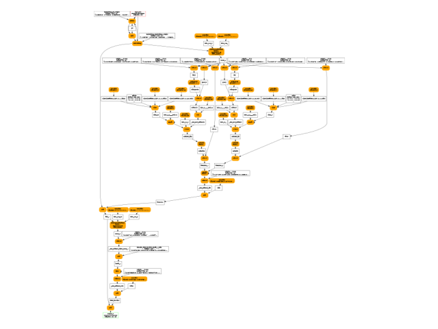

Note
Go to the end to download the full example code.
to_onnx and submodules from LLMs
Big models are hard to read once converted into onnx. Lets see how to improve their readibility. The code is inspired from LLM from scratch with Pytorch.
A simple LLM
All comments were removed from the code to make it less verbose. A few fixes were applied to the original code.
import onnx
from onnx.inliner import inline_local_functions
from onnx_array_api.plotting.graphviz_helper import plot_dot
from onnx_array_api.reference import compare_onnx_execution
from onnx_diagnostic.helpers import max_diff
from onnx_diagnostic.helpers.onnx_helper import pretty_onnx
import torch
from onnxruntime import InferenceSession
from experimental_experiment.reference import ExtendedReferenceEvaluator
from experimental_experiment.torch_interpreter import to_onnx
from experimental_experiment.xbuilder import OptimizationOptions
class Embedding(torch.nn.Module):
def __init__(self, vocab_size: int, embedding_dim: int):
super().__init__()
self.embedding = torch.nn.Embedding(vocab_size, embedding_dim)
self.pe = torch.nn.Embedding(vocab_size, embedding_dim)
def forward(self, x):
word_emb = self.embedding(x)
word_pe = self.pe(x)
return word_emb + word_pe
class AttentionBlock(torch.nn.Module):
def __init__(self, embedding_dim: int, context_size: int):
super().__init__()
self.query = torch.nn.Linear(embedding_dim, embedding_dim, bias=False)
self.key = torch.nn.Linear(embedding_dim, embedding_dim, bias=False)
self.value = torch.nn.Linear(embedding_dim, embedding_dim, bias=False)
ones = torch.ones(size=[context_size, context_size], dtype=torch.float)
self.register_buffer(name="mask", tensor=torch.tril(input=ones))
def forward(self, x):
_B, T, C = x.size()
query = self.query(x)
key = self.key(x)
value = self.value(x)
qk = query @ key.transpose(-2, -1) * C**-0.5
attention = qk.masked_fill(self.mask[:T, :T] == 0, float("-inf"))
attention = torch.nn.functional.softmax(input=attention, dim=-1)
out = attention @ value
return out
class MultiAttentionBlock(torch.nn.Module):
def __init__(self, embedding_dim: int, num_heads: int, context_size: int):
super().__init__()
self.attention = torch.nn.ModuleList(
modules=[AttentionBlock(embedding_dim, context_size) for _ in range(num_heads)]
)
self.linear = torch.nn.Linear(
in_features=embedding_dim * num_heads, out_features=embedding_dim
)
def forward(self, x):
out = torch.cat(tensors=[attention(x) for attention in self.attention], dim=-1)
x = self.linear(out)
return x
class FeedForward(torch.nn.Module):
def __init__(self, embedding_dim: int, ff_dim: int):
super().__init__()
self.linear_1 = torch.nn.Linear(embedding_dim, ff_dim)
self.relu = torch.nn.ReLU()
self.linear_2 = torch.nn.Linear(ff_dim, embedding_dim)
def forward(self, x):
x = self.linear_1(x)
x = self.relu(x)
x = self.linear_2(x)
return x
class DecoderLayer(torch.nn.Module):
def __init__(self, embedding_dim: int, num_heads: int, context_size: int, ff_dim: int):
super().__init__()
self.attention = MultiAttentionBlock(embedding_dim, num_heads, context_size)
self.feed_forward = FeedForward(embedding_dim, ff_dim)
self.norm_1 = torch.nn.LayerNorm(normalized_shape=embedding_dim)
self.norm_2 = torch.nn.LayerNorm(normalized_shape=embedding_dim)
def forward(self, x):
x_norm = self.norm_1(x)
attention = self.attention(x_norm)
attention = attention + x
attention_norm = self.norm_2(attention)
ff = self.feed_forward(attention_norm)
ff = ff + attention
return ff
class LLM(torch.nn.Module):
def __init__(
self,
vocab_size: int = 1024,
embedding_dim: int = 16,
num_heads: int = 2,
context_size: int = 256,
ff_dim: int = 128,
):
super().__init__()
self.embedding = Embedding(vocab_size, embedding_dim)
self.decoder = DecoderLayer(embedding_dim, num_heads, context_size, ff_dim)
def forward(self, input_ids):
x = self.embedding(input_ids)
y = self.decoder(x)
return y
llm = LLM()
dim = (1, 30)
input_ids = torch.randint(0, 1024, dim).to(torch.int64)
y = llm(input_ids)
print(f"output: shape={y.shape}, min={y.min()}, max={y.max()}")
output: shape=torch.Size([1, 30, 16]), min=-3.9320621490478516, max=4.487762451171875
First conversion to ONNX
The conversion relies on torch.export.export().
which gives:
ep = torch.export.export(llm, (input_ids,))
print(ep.graph)
graph():
%p_embedding_embedding_weight : [num_users=1] = placeholder[target=p_embedding_embedding_weight]
%p_embedding_pe_weight : [num_users=1] = placeholder[target=p_embedding_pe_weight]
%p_decoder_attention_attention_0_query_weight : [num_users=1] = placeholder[target=p_decoder_attention_attention_0_query_weight]
%p_decoder_attention_attention_0_key_weight : [num_users=1] = placeholder[target=p_decoder_attention_attention_0_key_weight]
%p_decoder_attention_attention_0_value_weight : [num_users=1] = placeholder[target=p_decoder_attention_attention_0_value_weight]
%p_decoder_attention_attention_1_query_weight : [num_users=1] = placeholder[target=p_decoder_attention_attention_1_query_weight]
%p_decoder_attention_attention_1_key_weight : [num_users=1] = placeholder[target=p_decoder_attention_attention_1_key_weight]
%p_decoder_attention_attention_1_value_weight : [num_users=1] = placeholder[target=p_decoder_attention_attention_1_value_weight]
%p_decoder_attention_linear_weight : [num_users=1] = placeholder[target=p_decoder_attention_linear_weight]
%p_decoder_attention_linear_bias : [num_users=1] = placeholder[target=p_decoder_attention_linear_bias]
%p_decoder_feed_forward_linear_1_weight : [num_users=1] = placeholder[target=p_decoder_feed_forward_linear_1_weight]
%p_decoder_feed_forward_linear_1_bias : [num_users=1] = placeholder[target=p_decoder_feed_forward_linear_1_bias]
%p_decoder_feed_forward_linear_2_weight : [num_users=1] = placeholder[target=p_decoder_feed_forward_linear_2_weight]
%p_decoder_feed_forward_linear_2_bias : [num_users=1] = placeholder[target=p_decoder_feed_forward_linear_2_bias]
%p_decoder_norm_1_weight : [num_users=1] = placeholder[target=p_decoder_norm_1_weight]
%p_decoder_norm_1_bias : [num_users=1] = placeholder[target=p_decoder_norm_1_bias]
%p_decoder_norm_2_weight : [num_users=1] = placeholder[target=p_decoder_norm_2_weight]
%p_decoder_norm_2_bias : [num_users=1] = placeholder[target=p_decoder_norm_2_bias]
%b_decoder_attention_attention_0_mask : [num_users=1] = placeholder[target=b_decoder_attention_attention_0_mask]
%b_decoder_attention_attention_1_mask : [num_users=1] = placeholder[target=b_decoder_attention_attention_1_mask]
%input_ids : [num_users=2] = placeholder[target=input_ids]
%embedding : [num_users=1] = call_function[target=torch.ops.aten.embedding.default](args = (%p_embedding_embedding_weight, %input_ids), kwargs = {})
%embedding_1 : [num_users=1] = call_function[target=torch.ops.aten.embedding.default](args = (%p_embedding_pe_weight, %input_ids), kwargs = {})
%add : [num_users=2] = call_function[target=torch.ops.aten.add.Tensor](args = (%embedding, %embedding_1), kwargs = {})
%layer_norm : [num_users=6] = call_function[target=torch.ops.aten.layer_norm.default](args = (%add, [16], %p_decoder_norm_1_weight, %p_decoder_norm_1_bias), kwargs = {})
%linear : [num_users=1] = call_function[target=torch.ops.aten.linear.default](args = (%layer_norm, %p_decoder_attention_attention_0_query_weight), kwargs = {})
%linear_1 : [num_users=1] = call_function[target=torch.ops.aten.linear.default](args = (%layer_norm, %p_decoder_attention_attention_0_key_weight), kwargs = {})
%linear_2 : [num_users=1] = call_function[target=torch.ops.aten.linear.default](args = (%layer_norm, %p_decoder_attention_attention_0_value_weight), kwargs = {})
%transpose : [num_users=1] = call_function[target=torch.ops.aten.transpose.int](args = (%linear_1, -2, -1), kwargs = {})
%matmul : [num_users=1] = call_function[target=torch.ops.aten.matmul.default](args = (%linear, %transpose), kwargs = {})
%mul : [num_users=1] = call_function[target=torch.ops.aten.mul.Tensor](args = (%matmul, 0.25), kwargs = {})
%slice_1 : [num_users=1] = call_function[target=torch.ops.aten.slice.Tensor](args = (%b_decoder_attention_attention_0_mask, 0, 0, 30), kwargs = {})
%slice_2 : [num_users=1] = call_function[target=torch.ops.aten.slice.Tensor](args = (%slice_1, 1, 0, 30), kwargs = {})
%eq : [num_users=1] = call_function[target=torch.ops.aten.eq.Scalar](args = (%slice_2, 0), kwargs = {})
%masked_fill : [num_users=1] = call_function[target=torch.ops.aten.masked_fill.Scalar](args = (%mul, %eq, -inf), kwargs = {})
%softmax : [num_users=1] = call_function[target=torch.ops.aten.softmax.int](args = (%masked_fill, -1), kwargs = {})
%matmul_1 : [num_users=1] = call_function[target=torch.ops.aten.matmul.default](args = (%softmax, %linear_2), kwargs = {})
%linear_3 : [num_users=1] = call_function[target=torch.ops.aten.linear.default](args = (%layer_norm, %p_decoder_attention_attention_1_query_weight), kwargs = {})
%linear_4 : [num_users=1] = call_function[target=torch.ops.aten.linear.default](args = (%layer_norm, %p_decoder_attention_attention_1_key_weight), kwargs = {})
%linear_5 : [num_users=1] = call_function[target=torch.ops.aten.linear.default](args = (%layer_norm, %p_decoder_attention_attention_1_value_weight), kwargs = {})
%transpose_1 : [num_users=1] = call_function[target=torch.ops.aten.transpose.int](args = (%linear_4, -2, -1), kwargs = {})
%matmul_2 : [num_users=1] = call_function[target=torch.ops.aten.matmul.default](args = (%linear_3, %transpose_1), kwargs = {})
%mul_1 : [num_users=1] = call_function[target=torch.ops.aten.mul.Tensor](args = (%matmul_2, 0.25), kwargs = {})
%slice_3 : [num_users=1] = call_function[target=torch.ops.aten.slice.Tensor](args = (%b_decoder_attention_attention_1_mask, 0, 0, 30), kwargs = {})
%slice_4 : [num_users=1] = call_function[target=torch.ops.aten.slice.Tensor](args = (%slice_3, 1, 0, 30), kwargs = {})
%eq_1 : [num_users=1] = call_function[target=torch.ops.aten.eq.Scalar](args = (%slice_4, 0), kwargs = {})
%masked_fill_1 : [num_users=1] = call_function[target=torch.ops.aten.masked_fill.Scalar](args = (%mul_1, %eq_1, -inf), kwargs = {})
%softmax_1 : [num_users=1] = call_function[target=torch.ops.aten.softmax.int](args = (%masked_fill_1, -1), kwargs = {})
%matmul_3 : [num_users=1] = call_function[target=torch.ops.aten.matmul.default](args = (%softmax_1, %linear_5), kwargs = {})
%cat : [num_users=1] = call_function[target=torch.ops.aten.cat.default](args = ([%matmul_1, %matmul_3], -1), kwargs = {})
%linear_6 : [num_users=1] = call_function[target=torch.ops.aten.linear.default](args = (%cat, %p_decoder_attention_linear_weight, %p_decoder_attention_linear_bias), kwargs = {})
%add_1 : [num_users=2] = call_function[target=torch.ops.aten.add.Tensor](args = (%linear_6, %add), kwargs = {})
%layer_norm_1 : [num_users=1] = call_function[target=torch.ops.aten.layer_norm.default](args = (%add_1, [16], %p_decoder_norm_2_weight, %p_decoder_norm_2_bias), kwargs = {})
%linear_7 : [num_users=1] = call_function[target=torch.ops.aten.linear.default](args = (%layer_norm_1, %p_decoder_feed_forward_linear_1_weight, %p_decoder_feed_forward_linear_1_bias), kwargs = {})
%relu : [num_users=1] = call_function[target=torch.ops.aten.relu.default](args = (%linear_7,), kwargs = {})
%linear_8 : [num_users=1] = call_function[target=torch.ops.aten.linear.default](args = (%relu, %p_decoder_feed_forward_linear_2_weight, %p_decoder_feed_forward_linear_2_bias), kwargs = {})
%add_2 : [num_users=1] = call_function[target=torch.ops.aten.add.Tensor](args = (%linear_8, %add_1), kwargs = {})
return (add_2,)
Then function to_onnx
converts it into ONNX.
onx = to_onnx(llm, (input_ids,))
print(pretty_onnx(onx))
opset: domain='' version=18
input: name='input_ids' type=dtype('int64') shape=[1, 30]
init: name='b_decoder_attention_attention_0_mask' type=float32 shape=(256, 256)-- DynamoInterpret.placeholder.0
init: name='b_decoder_attention_attention_1_mask' type=float32 shape=(256, 256)-- DynamoInterpret.placeholder.0
init: name='init7_s1_1' type=int64 shape=(1,) -- array([1]) -- Opset.make_node.1/Shape##Opset.make_node.1/Shape##Opset.make_node.1/Shape##Opset.make_node.1/Shape##Opset.make_node.1/Shape##Opset.make_node.1/Shape
init: name='init7_s1_0' type=int64 shape=(1,) -- array([0]) -- Opset.make_node.1/Shape##Opset.make_node.1/Shape##Opset.make_node.1/Shape##Opset.make_node.1/Shape##Opset.make_node.1/Shape##Opset.make_node.1/Shape
init: name='init7_s1_30' type=int64 shape=(1,) -- array([30]) -- Opset.make_node.1/Shape##Opset.make_node.1/Shape##Opset.make_node.1/Shape##Opset.make_node.1/Shape
init: name='init1_s1_3' type=float32 shape=(1,) -- array([-inf], dtype=float32)-- Opset.make_node.1/Small##Opset.make_node.1/Small
init: name='p_decoder_attention_attention_0_query_weight::T10' type=float32 shape=(16, 16)-- GraphBuilder.constant_folding.from/fold(p_decoder_attention_attention_0_query_weight)##p_decoder_attention_attention_0_query_weight/DynamoInterpret.placeholder.1/P(decoder.attention.attention.0.query.weight)
init: name='p_decoder_attention_attention_0_key_weight::T10' type=float32 shape=(16, 16)-- GraphBuilder.constant_folding.from/fold(p_decoder_attention_attention_0_key_weight)##p_decoder_attention_attention_0_key_weight/DynamoInterpret.placeholder.1/P(decoder.attention.attention.0.key.weight)
init: name='p_decoder_attention_attention_0_value_weight::T10' type=float32 shape=(16, 16)-- GraphBuilder.constant_folding.from/fold(p_decoder_attention_attention_0_value_weight)##p_decoder_attention_attention_0_value_weight/DynamoInterpret.placeholder.1/P(decoder.attention.attention.0.value.weight)
init: name='init1_s_::RSh1' type=float32 shape=(1,) -- array([0.25], dtype=float32)-- GraphBuilder.constant_folding.from/fold(init1_s_,init7_s1_1)##init1_s_/shape_type_compute._cast_inputs.1(mul_Tensor)##shape_type_compute._cast_inputs.1(mul_Tensor)##init7_s1_1/Opset.make_node.1/Shape##Opset.make_node.1/Shape##Opset.make_node.1/Shape##Opset.make_node.1/Shape##Opset.make_node.1/Shape##Opset.make_node.1/Shape
init: name='init1_s_2::RSh1' type=float32 shape=(1,) -- array([0.], dtype=float32)-- GraphBuilder.constant_folding.from/fold(init1_s_2,init7_s1_1)##init1_s_2/shape_type_compute._cast_inputs.0##shape_type_compute._cast_inputs.0##init7_s1_1/Opset.make_node.1/Shape##Opset.make_node.1/Shape##Opset.make_node.1/Shape##Opset.make_node.1/Shape##Opset.make_node.1/Shape##Opset.make_node.1/Shape
init: name='p_decoder_attention_attention_1_query_weight::T10' type=float32 shape=(16, 16)-- GraphBuilder.constant_folding.from/fold(p_decoder_attention_attention_1_query_weight)##p_decoder_attention_attention_1_query_weight/DynamoInterpret.placeholder.1/P(decoder.attention.attention.1.query.weight)
init: name='p_decoder_attention_attention_1_key_weight::T10' type=float32 shape=(16, 16)-- GraphBuilder.constant_folding.from/fold(p_decoder_attention_attention_1_key_weight)##p_decoder_attention_attention_1_key_weight/DynamoInterpret.placeholder.1/P(decoder.attention.attention.1.key.weight)
init: name='p_decoder_attention_attention_1_value_weight::T10' type=float32 shape=(16, 16)-- GraphBuilder.constant_folding.from/fold(p_decoder_attention_attention_1_value_weight)##p_decoder_attention_attention_1_value_weight/DynamoInterpret.placeholder.1/P(decoder.attention.attention.1.value.weight)
init: name='p_decoder_attention_linear_weight::T10' type=float32 shape=(32, 16)-- GraphBuilder.constant_folding.from/fold(p_decoder_attention_linear_weight)##p_decoder_attention_linear_weight/DynamoInterpret.placeholder.1/P(decoder.attention.linear.weight)
init: name='p_decoder_feed_forward_linear_1_weight::T10' type=float32 shape=(16, 128)-- GraphBuilder.constant_folding.from/fold(p_decoder_feed_forward_linear_1_weight)##p_decoder_feed_forward_linear_1_weight/DynamoInterpret.placeholder.1/P(decoder.feed_forward.linear_1.weight)
init: name='p_decoder_feed_forward_linear_2_weight::T10' type=float32 shape=(128, 16)-- GraphBuilder.constant_folding.from/fold(p_decoder_feed_forward_linear_2_weight)##p_decoder_feed_forward_linear_2_weight/DynamoInterpret.placeholder.1/P(decoder.feed_forward.linear_2.weight)
init: name='init1_s16_' type=float32 shape=(16,) -- LayerNormalizationPattern.apply.scale##LayerNormalizationPattern.apply.scale
init: name='init1_s16_2' type=float32 shape=(16,) -- LayerNormalizationPattern.apply.bias##LayerNormalizationPattern.apply.bias
init: name='embedding.embedding.weight' type=float32 shape=(1024, 16) -- DynamoInterpret.placeholder.1/P(embedding.embedding.weight)
init: name='embedding.pe.weight' type=float32 shape=(1024, 16) -- DynamoInterpret.placeholder.1/P(embedding.pe.weight)
init: name='decoder.attention.linear.bias' type=float32 shape=(16,) -- DynamoInterpret.placeholder.1/P(decoder.attention.linear.bias)
init: name='decoder.feed_forward.linear_1.bias' type=float32 shape=(128,)-- DynamoInterpret.placeholder.1/P(decoder.feed_forward.linear_1.bias)
init: name='decoder.feed_forward.linear_2.bias' type=float32 shape=(16,)-- DynamoInterpret.placeholder.1/P(decoder.feed_forward.linear_2.bias)
Concat(init7_s1_0, init7_s1_1, axis=0) -> SliceSlicePattern_init7_s1_1_axis
Concat(init7_s1_30, init7_s1_30, axis=0) -> SliceSlicePattern_init7_s1_30_end
Concat(init7_s1_0, init7_s1_0, axis=0) -> SliceSlicePattern_init7_s1_0_start
Slice(b_decoder_attention_attention_0_mask, SliceSlicePattern_init7_s1_0_start, SliceSlicePattern_init7_s1_30_end, SliceSlicePattern_init7_s1_1_axis) -> slice_2
Equal(slice_2, init1_s_2::RSh1) -> eq
Gather(embedding.embedding.weight, input_ids) -> embedding
Gather(embedding.pe.weight, input_ids) -> embedding_1
Add(embedding, embedding_1) -> add
LayerNormalization(add, init1_s16_, init1_s16_2, axis=-1, epsilon=0.00, stash_type=1) -> _onx_div_sub_add
MatMul(_onx_div_sub_add, p_decoder_attention_attention_0_query_weight::T10) -> linear
MatMul(_onx_div_sub_add, p_decoder_attention_attention_0_key_weight::T10) -> linear_1
Transpose(linear_1, perm=[0,2,1]) -> transpose
MatMul(linear, transpose) -> matmul
Mul(matmul, init1_s_::RSh1) -> _onx_mul_matmul
Where(eq, init1_s1_3, _onx_mul_matmul) -> masked_fill
Softmax(masked_fill, axis=-1) -> softmax
MatMul(_onx_div_sub_add, p_decoder_attention_attention_0_value_weight::T10) -> linear_2
MatMul(softmax, linear_2) -> matmul_1
MatMul(_onx_div_sub_add, p_decoder_attention_attention_1_query_weight::T10) -> linear_3
MatMul(_onx_div_sub_add, p_decoder_attention_attention_1_key_weight::T10) -> linear_4
Transpose(linear_4, perm=[0,2,1]) -> transpose_1
MatMul(linear_3, transpose_1) -> matmul_2
Mul(matmul_2, init1_s_::RSh1) -> _onx_mul_matmul_2
MatMul(_onx_div_sub_add, p_decoder_attention_attention_1_value_weight::T10) -> linear_5
Slice(b_decoder_attention_attention_1_mask, SliceSlicePattern_init7_s1_0_start, SliceSlicePattern_init7_s1_30_end, SliceSlicePattern_init7_s1_1_axis) -> slice_4
Equal(slice_4, init1_s_2::RSh1) -> eq_1
Where(eq_1, init1_s1_3, _onx_mul_matmul_2) -> masked_fill_1
Softmax(masked_fill_1, axis=-1) -> softmax_1
MatMul(softmax_1, linear_5) -> matmul_3
Concat(matmul_1, matmul_3, axis=-1) -> cat
MatMul(cat, p_decoder_attention_linear_weight::T10) -> _onx_matmul_cat
Add(_onx_matmul_cat, decoder.attention.linear.bias) -> linear_6
Add(linear_6, add) -> add_1
LayerNormalization(add_1, init1_s16_, init1_s16_2, axis=-1, epsilon=0.00, stash_type=1) -> _onx_div_sub_add_1
MatMul(_onx_div_sub_add_1, p_decoder_feed_forward_linear_1_weight::T10) -> _onx_matmul_layer_norm_1
Add(_onx_matmul_layer_norm_1, decoder.feed_forward.linear_1.bias) -> linear_7
Relu(linear_7) -> relu
MatMul(relu, p_decoder_feed_forward_linear_2_weight::T10) -> _onx_matmul_relu
Add(_onx_matmul_relu, decoder.feed_forward.linear_2.bias) -> linear_8
Add(linear_8, add_1) -> output_0
output: name='output_0' type=dtype('float32') shape=[1, 30, 16]
Lets check there is no discrepancy.
output: shape=(1, 30, 16), min=-3.9320619106292725, max=4.487762451171875
max discrepancy=2.384185791015625e-07
Lets save the ONNX model.
onnx.save(onx, "plot_exporter_recipes_c_modules.inlined.onnx")
ONNX with submodules
Lets produce an ONNX model with submodules.
Function to_onnx
is calling the function torch.export.unflatten.unflatten()
under the hood. The fx graph looks like the following.
ep = torch.export.export(llm, (input_ids,))
unflatten_ep = torch.export.unflatten(ep)
print(unflatten_ep.graph)
graph():
%input_ids : [num_users=1] = placeholder[target=input_ids]
%embedding : [num_users=1] = call_module[target=embedding](args = (%input_ids,), kwargs = {})
%decoder : [num_users=1] = call_module[target=decoder](args = (%embedding,), kwargs = {})
return (decoder,)
The exported graph looks simpler and shows something like:
%decoder : [num_users=1] = call_module[target=decoder](args = (%embedding,), kwargs = {})
It preserves the hierarchy but it does not necessarily preserves the signatures
of the initial modules. Thats was not one of our goals.
The tricky part is module called (embedding) is not an instance Embedding
but an instance of InterpreterModule
and contains the fx nodes contributing to the submodule and coming from the
previous graph.
Now the ONNX graph.
onx_module = to_onnx(llm, (input_ids,), export_modules_as_functions=True)
print(pretty_onnx(onx_module))
opset: domain='' version=18
opset: domain='aten_local_function' version=1
input: name='input_ids' type=dtype('int64') shape=[1, 30]
init: name='embedding.embedding.weight' type=float32 shape=(1024, 16) -- GraphBuilder.make_local_function/from(embedding.embedding.weight)
init: name='embedding.pe.weight' type=float32 shape=(1024, 16) -- GraphBuilder.make_local_function/from(embedding.pe.weight)
init: name='mask' type=float32 shape=(256, 256) -- GraphBuilder.make_local_function/from(mask)
init: name='weight::T10' type=float32 shape=(16, 16) -- GraphBuilder.make_local_function/from(weight::T10)
init: name='weight::T102' type=float32 shape=(16, 16) -- GraphBuilder.make_local_function/from(weight::T102)
init: name='weight::T103' type=float32 shape=(16, 16) -- GraphBuilder.make_local_function/from(weight::T103)
init: name='mask2' type=float32 shape=(256, 256) -- GraphBuilder.make_local_function/from(mask2)
init: name='weight::T104' type=float32 shape=(16, 16) -- GraphBuilder.make_local_function/from(weight::T104)
init: name='weight::T1022' type=float32 shape=(16, 16) -- GraphBuilder.make_local_function/from(weight::T1022)
init: name='weight::T1032' type=float32 shape=(16, 16) -- GraphBuilder.make_local_function/from(weight::T1032)
init: name='weight::T105' type=float32 shape=(32, 16) -- GraphBuilder.make_local_function/from(weight::T105)
init: name='decoder.feed_forward.linear_1.bias' type=float32 shape=(128,)-- GraphBuilder.make_local_function/from(decoder.feed_forward.linear_1.bias)
init: name='weight::T106' type=float32 shape=(16, 128) -- GraphBuilder.make_local_function/from(weight::T106)
init: name='weight::T1023' type=float32 shape=(128, 16) -- GraphBuilder.make_local_function/from(weight::T1023)
Constant(value=[1.0, 1.0,...) -> init1_s16_
Gather(embedding.embedding.weight, input_ids) -> embedding2
Gather(embedding.pe.weight, input_ids) -> pe
Add(embedding2, pe) -> embedding
Constant(value=[0.0, 0.0,...) -> init1_s16_2
LayerNormalization(embedding, init1_s16_, init1_s16_2, axis=-1, epsilon=0.00, stash_type=1) -> norm_1
MatMul(norm_1, weight::T10) -> query
Constant(value=[-inf]) -> init1_s1_
Constant(value=[0.25]) -> init1_s_::RSh1
Constant(value=[0.0]) -> init1_s_2::RSh1
Constant(value=[0, 0]) -> SliceSlicePattern_init7_s1_0_start
Constant(value=[30, 30]) -> SliceSlicePattern_init7_s1_30_end
Constant(value=[0, 1]) -> SliceSlicePattern_init7_s1_1_axis
Slice(mask, SliceSlicePattern_init7_s1_0_start, SliceSlicePattern_init7_s1_30_end, SliceSlicePattern_init7_s1_1_axis) -> slice_2
Equal(slice_2, init1_s_2::RSh1) -> eq
MatMul(norm_1, weight::T102) -> key
Transpose(key, perm=[0,2,1]) -> transpose
MatMul(query, transpose) -> matmul
Mul(matmul, init1_s_::RSh1) -> _onx_mul_matmul
Where(eq, init1_s1_, _onx_mul_matmul) -> masked_fill
Softmax(masked_fill, axis=-1) -> softmax
MatMul(norm_1, weight::T103) -> value
MatMul(softmax, value) -> attention_0
Constant(value=[-inf]) -> init1_s1_2
Constant(value=[0.25]) -> init1_s_::RSh12
Constant(value=[0.0]) -> init1_s_2::RSh12
Constant(value=[0, 0]) -> SliceSlicePattern_init7_s1_0_start2
Constant(value=[30, 30]) -> SliceSlicePattern_init7_s1_30_end2
Constant(value=[0, 1]) -> SliceSlicePattern_init7_s1_1_axis2
Slice(mask2, SliceSlicePattern_init7_s1_0_start2, SliceSlicePattern_init7_s1_30_end2, SliceSlicePattern_init7_s1_1_axis2) -> slice_22
Equal(slice_22, init1_s_2::RSh12) -> eq2
MatMul(norm_1, weight::T104) -> query2
MatMul(norm_1, weight::T1022) -> key2
Transpose(key2, perm=[0,2,1]) -> transpose2
MatMul(query2, transpose2) -> matmul2
Mul(matmul2, init1_s_::RSh12) -> _onx_mul_matmul2
Where(eq2, init1_s1_2, _onx_mul_matmul2) -> masked_fill2
Softmax(masked_fill2, axis=-1) -> softmax2
MatMul(norm_1, weight::T1032) -> value2
MatMul(softmax2, value2) -> attention_1
Concat(attention_0, attention_1, axis=-1) -> cat
MatMul(cat, weight::T105) -> _onx_matmul_cat
Constant(value=[-0.038584...) -> bias
Add(_onx_matmul_cat, bias) -> attention
Add(attention, embedding) -> add_1
Constant(value=[1.0, 1.0,...) -> init1_s16_3
Constant(value=[0.0, 0.0,...) -> init1_s16_22
LayerNormalization(add_1, init1_s16_3, init1_s16_22, axis=-1, epsilon=0.00, stash_type=1) -> norm_2
MatMul(norm_2, weight::T106) -> _onx_matmul_layer_norm_1
Add(_onx_matmul_layer_norm_1, decoder.feed_forward.linear_1.bias) -> linear_1
Relu(linear_1) -> relu
MatMul(relu, weight::T1023) -> _onx_matmul_relu
Constant(value=[0.0003007...) -> bias2
Add(_onx_matmul_relu, bias2) -> feed_forward
Add(feed_forward, add_1) -> output_0
output: name='output_0' type=dtype('float32') shape=[1, 30, 16]
We check again there is no new discrepancies.
output: shape=(1, 30, 16), min=-3.9320619106292725, max=4.487762451171875
max discrepancy=2.384185791015625e-07
Lets save the ONNX model.
onnx.save(onx_module, "plot_exporter_recipes_c_modules.module.onnx")
And visually.
Inlining
The ONNX graph can still be inline after this.
opset: domain='' version=18
opset: domain='aten_local_function' version=1
input: name='input_ids' type=dtype('int64') shape=[1, 30]
init: name='embedding.embedding.weight' type=float32 shape=(1024, 16) -- GraphBuilder.make_local_function/from(embedding.embedding.weight)
init: name='embedding.pe.weight' type=float32 shape=(1024, 16) -- GraphBuilder.make_local_function/from(embedding.pe.weight)
init: name='mask' type=float32 shape=(256, 256) -- GraphBuilder.make_local_function/from(mask)
init: name='weight::T10' type=float32 shape=(16, 16) -- GraphBuilder.make_local_function/from(weight::T10)
init: name='weight::T102' type=float32 shape=(16, 16) -- GraphBuilder.make_local_function/from(weight::T102)
init: name='weight::T103' type=float32 shape=(16, 16) -- GraphBuilder.make_local_function/from(weight::T103)
init: name='mask2' type=float32 shape=(256, 256) -- GraphBuilder.make_local_function/from(mask2)
init: name='weight::T104' type=float32 shape=(16, 16) -- GraphBuilder.make_local_function/from(weight::T104)
init: name='weight::T1022' type=float32 shape=(16, 16) -- GraphBuilder.make_local_function/from(weight::T1022)
init: name='weight::T1032' type=float32 shape=(16, 16) -- GraphBuilder.make_local_function/from(weight::T1032)
init: name='weight::T105' type=float32 shape=(32, 16) -- GraphBuilder.make_local_function/from(weight::T105)
init: name='decoder.feed_forward.linear_1.bias' type=float32 shape=(128,)-- GraphBuilder.make_local_function/from(decoder.feed_forward.linear_1.bias)
init: name='weight::T106' type=float32 shape=(16, 128) -- GraphBuilder.make_local_function/from(weight::T106)
init: name='weight::T1023' type=float32 shape=(128, 16) -- GraphBuilder.make_local_function/from(weight::T1023)
Constant(value=[1.0, 1.0,...) -> init1_s16_
Gather(embedding.embedding.weight, input_ids) -> embedding2
Gather(embedding.pe.weight, input_ids) -> pe
Add(embedding2, pe) -> embedding
Constant(value=[0.0, 0.0,...) -> init1_s16_2
LayerNormalization(embedding, init1_s16_, init1_s16_2, axis=-1, epsilon=0.00, stash_type=1) -> norm_1
MatMul(norm_1, weight::T10) -> query
Constant(value=[-inf]) -> init1_s1_
Constant(value=[0.25]) -> init1_s_::RSh1
Constant(value=[0.0]) -> init1_s_2::RSh1
Constant(value=[0, 0]) -> SliceSlicePattern_init7_s1_0_start
Constant(value=[30, 30]) -> SliceSlicePattern_init7_s1_30_end
Constant(value=[0, 1]) -> SliceSlicePattern_init7_s1_1_axis
Slice(mask, SliceSlicePattern_init7_s1_0_start, SliceSlicePattern_init7_s1_30_end, SliceSlicePattern_init7_s1_1_axis) -> slice_2
Equal(slice_2, init1_s_2::RSh1) -> eq
MatMul(norm_1, weight::T102) -> key
Transpose(key, perm=[0,2,1]) -> transpose
MatMul(query, transpose) -> matmul
Mul(matmul, init1_s_::RSh1) -> _onx_mul_matmul
Where(eq, init1_s1_, _onx_mul_matmul) -> masked_fill
Softmax(masked_fill, axis=-1) -> softmax
MatMul(norm_1, weight::T103) -> value
MatMul(softmax, value) -> attention_0
Constant(value=[-inf]) -> init1_s1_2
Constant(value=[0.25]) -> init1_s_::RSh12
Constant(value=[0.0]) -> init1_s_2::RSh12
Constant(value=[0, 0]) -> SliceSlicePattern_init7_s1_0_start2
Constant(value=[30, 30]) -> SliceSlicePattern_init7_s1_30_end2
Constant(value=[0, 1]) -> SliceSlicePattern_init7_s1_1_axis2
Slice(mask2, SliceSlicePattern_init7_s1_0_start2, SliceSlicePattern_init7_s1_30_end2, SliceSlicePattern_init7_s1_1_axis2) -> slice_22
Equal(slice_22, init1_s_2::RSh12) -> eq2
MatMul(norm_1, weight::T104) -> query2
MatMul(norm_1, weight::T1022) -> key2
Transpose(key2, perm=[0,2,1]) -> transpose2
MatMul(query2, transpose2) -> matmul2
Mul(matmul2, init1_s_::RSh12) -> _onx_mul_matmul2
Where(eq2, init1_s1_2, _onx_mul_matmul2) -> masked_fill2
Softmax(masked_fill2, axis=-1) -> softmax2
MatMul(norm_1, weight::T1032) -> value2
MatMul(softmax2, value2) -> attention_1
Concat(attention_0, attention_1, axis=-1) -> cat
MatMul(cat, weight::T105) -> _onx_matmul_cat
Constant(value=[-0.038584...) -> bias
Add(_onx_matmul_cat, bias) -> attention
Add(attention, embedding) -> add_1
Constant(value=[1.0, 1.0,...) -> init1_s16_3
Constant(value=[0.0, 0.0,...) -> init1_s16_22
LayerNormalization(add_1, init1_s16_3, init1_s16_22, axis=-1, epsilon=0.00, stash_type=1) -> norm_2
MatMul(norm_2, weight::T106) -> _onx_matmul_layer_norm_1
Add(_onx_matmul_layer_norm_1, decoder.feed_forward.linear_1.bias) -> linear_1
Relu(linear_1) -> relu
MatMul(relu, weight::T1023) -> _onx_matmul_relu
Constant(value=[0.0003007...) -> bias2
Add(_onx_matmul_relu, bias2) -> feed_forward
Add(feed_forward, add_1) -> output_0
output: name='output_0' type=dtype('float32') shape=[1, 30, 16]
Optimizations
The ONNX graph produced by the exporter without any optimization is very verbose and less efficient. Thats why some optimizations are made to the model by default. It is also possible to introduce kernels implemented in onnxruntime. Lets how it goes.
onx_optimized = to_onnx(
llm,
(input_ids,),
options=OptimizationOptions(patterns="default+onnxruntime", constant_folding=True, verbose=2),
)
print(pretty_onnx(onx_optimized))
[GraphBuilder-ZTG.optimize] start with 73 nodes
[GraphBuilder-ZTG.optimize] #patterns=101
[GraphBuilder-ZTG.remove_unused] remove_initializer 1:1/47:embedding.embedding.weight:torch.float32[torch.Size([1024, 16])]
[GraphBuilder-ZTG.remove_unused] remove_initializer 2:3/47:embedding.pe.weight:torch.float32[torch.Size([1024, 16])]
[GraphBuilder-ZTG.remove_unused] remove_initializer 3:5/47:decoder.attention.attention.0.query.weight:torch.float32[torch.Size([16, 16])]
[GraphBuilder-ZTG.remove_unused] remove_initializer 4:7/47:decoder.attention.attention.0.key.weight:torch.float32[torch.Size([16, 16])]
[GraphBuilder-ZTG.remove_unused] remove_initializer 5:9/47:decoder.attention.attention.0.value.weight:torch.float32[torch.Size([16, 16])]
[GraphBuilder-ZTG.remove_unused] remove_initializer 6:11/47:decoder.attention.attention.1.query.weight:torch.float32[torch.Size([16, 16])]
[GraphBuilder-ZTG.remove_unused] remove_initializer 7:13/47:decoder.attention.attention.1.key.weight:torch.float32[torch.Size([16, 16])]
[GraphBuilder-ZTG.remove_unused] remove_initializer 8:15/47:decoder.attention.attention.1.value.weight:torch.float32[torch.Size([16, 16])]
[GraphBuilder-ZTG.remove_unused] remove_initializer 9:17/47:decoder.attention.linear.weight:torch.float32[torch.Size([16, 32])]
[GraphBuilder-ZTG.remove_unused] remove_initializer 10:19/47:decoder.attention.linear.bias:torch.float32[torch.Size([16])]
[GraphBuilder-ZTG.remove_unused] remove_initializer 11:21/47:decoder.feed_forward.linear_1.weight:torch.float32[torch.Size([128, 16])]
[GraphBuilder-ZTG.remove_unused] remove_initializer 12:23/47:decoder.feed_forward.linear_1.bias:torch.float32[torch.Size([128])]
[GraphBuilder-ZTG.remove_unused] remove_initializer 13:25/47:decoder.feed_forward.linear_2.weight:torch.float32[torch.Size([16, 128])]
[GraphBuilder-ZTG.remove_unused] remove_initializer 14:27/47:decoder.feed_forward.linear_2.bias:torch.float32[torch.Size([16])]
[GraphBuilder-ZTG.remove_unused] remove_initializer 15:29/47:decoder.norm_1.weight:torch.float32[torch.Size([16])]
[GraphBuilder-ZTG.remove_unused] remove_initializer 16:31/47:decoder.norm_1.bias:torch.float32[torch.Size([16])]
[GraphBuilder-ZTG.remove_unused] remove_initializer 17:33/47:decoder.norm_2.weight:torch.float32[torch.Size([16])]
[GraphBuilder-ZTG.remove_unused] remove_initializer 18:35/47:decoder.norm_2.bias:torch.float32[torch.Size([16])]
[GraphBuilder-ZTG.remove_unused] remove_initializer 1:2/46:p_decoder_attention_attention_0_query_weight:torch.float32[torch.Size([16, 16])]
[GraphBuilder-ZTG.remove_unused] remove_initializer 2:3/46:p_decoder_attention_attention_0_key_weight:torch.float32[torch.Size([16, 16])]
[GraphBuilder-ZTG.remove_unused] remove_initializer 3:4/46:p_decoder_attention_attention_0_value_weight:torch.float32[torch.Size([16, 16])]
[GraphBuilder-ZTG.remove_unused] remove_initializer 4:5/46:p_decoder_attention_attention_1_query_weight:torch.float32[torch.Size([16, 16])]
[GraphBuilder-ZTG.remove_unused] remove_initializer 5:6/46:p_decoder_attention_attention_1_key_weight:torch.float32[torch.Size([16, 16])]
[GraphBuilder-ZTG.remove_unused] remove_initializer 6:7/46:p_decoder_attention_attention_1_value_weight:torch.float32[torch.Size([16, 16])]
[GraphBuilder-ZTG.remove_unused] remove_initializer 7:8/46:p_decoder_attention_linear_weight:torch.float32[torch.Size([16, 32])]
[GraphBuilder-ZTG.remove_unused] remove_initializer 8:10/46:p_decoder_feed_forward_linear_1_weight:torch.float32[torch.Size([128, 16])]
[GraphBuilder-ZTG.remove_unused] remove_initializer 9:12/46:p_decoder_feed_forward_linear_2_weight:torch.float32[torch.Size([16, 128])]
[GraphBuilder-ZTG.remove_unused] remove_initializer 10:18/46:b_decoder_attention_attention_0_mask:torch.float32[torch.Size([256, 256])]
[GraphBuilder-ZTG.remove_unused] remove_initializer 11:19/46:b_decoder_attention_attention_1_mask:torch.float32[torch.Size([256, 256])]
[GraphBuilder-ZTG.remove_unused] remove_initializer 12:23/46:init1_s_:float32[()]
[GraphBuilder-ZTG.remove_unused] remove_initializer 13:24/46:init7_s1_1:int64[(1,)]
[GraphBuilder-ZTG.remove_unused] remove_initializer 14:25/46:init7_s1_0:int64[(1,)]
[GraphBuilder-ZTG.remove_unused] remove_initializer 15:26/46:init7_s1_30:int64[(1,)]
[GraphBuilder-ZTG.remove_unused] remove_initializer 16:27/46:init1_s_2:float32[()]
[GraphBuilder-ZTG.remove_unused] remove_initializer 17:33/46:slice_1:torch.float32[torch.Size([30, 256])]
[GraphBuilder-ZTG.remove_unused] remove_initializer 18:40/46:slice_3:torch.float32[torch.Size([30, 256])]
[GraphBuilderPatternOptimization-ZTG.optimize] start with 53 nodes, 28 initializers, 101 patterns, priorities=[0, 1, 2, 3], max_iter=212
[GraphBuilderPatternOptimization-ZTG.optimize] use pattern 1/101 - P0 - BatchNormalizationPattern()
[GraphBuilderPatternOptimization-ZTG.optimize] use pattern 2/101 - P0 - BatchNormalizationTrainingPattern()
[GraphBuilderPatternOptimization-ZTG.optimize] use pattern 3/101 - P0 - CastCastPattern()
[GraphBuilderPatternOptimization-ZTG.optimize] use pattern 4/101 - P0 - CastPattern()
[GraphBuilderPatternOptimization-ZTG.optimize] use pattern 5/101 - P0 - ConcatGatherPattern()
[GraphBuilderPatternOptimization-ZTG.optimize] use pattern 6/101 - P0 - ConcatReshapePattern()
[GraphBuilderPatternOptimization-ZTG.optimize] use pattern 7/101 - P0 - ConvBiasNullPattern()
[GraphBuilderPatternOptimization-ZTG.optimize] use pattern 8/101 - P0 - ExpandPattern()
[GraphBuilderPatternOptimization-ZTG.optimize] use pattern 9/101 - P0 - FunctionAttentionPattern()
[GraphBuilderPatternOptimization-ZTG.optimize] use pattern 10/101 - P0 - GeluErfPattern()
[GraphBuilderPatternOptimization-ZTG.optimize] use pattern 11/101 - P0 - GeluOrtPattern()
[GraphBuilderPatternOptimization-ZTG.optimize] use pattern 12/101 - P0 - GeluPattern()
[GraphBuilderPatternOptimization-ZTG.optimize] use pattern 13/101 - P0 - IdentityPattern()
[GraphBuilderPatternOptimization-ZTG.optimize] use pattern 14/101 - P0 - LeakyReluPattern()
[GraphBuilderPatternOptimization-ZTG.optimize] use pattern 15/101 - P0 - ReshapePattern()
[GraphBuilderPatternOptimization-ZTG.optimize] use pattern 16/101 - P0 - ReshapeReshapePattern()
[GraphBuilderPatternOptimization-ZTG.optimize] use pattern 17/101 - P0 - SameChildrenFromInputPattern()
[GraphBuilderPatternOptimization-ZTG.optimize] use pattern 18/101 - P0 - SameChildrenPattern()
[GraphBuilderPatternOptimization-ZTG.optimize] use pattern 19/101 - P0 - ShapeBasedEditDistanceReshapePattern()
[GraphBuilderPatternOptimization-ZTG.optimize] use pattern 20/101 - P0 - ShapeBasedIdentityPattern()
[GraphBuilderPatternOptimization-ZTG.optimize] use pattern 21/101 - P0 - ShapeBasedReshapeIsSqueezePattern()
[GraphBuilderPatternOptimization-ZTG.optimize] use pattern 22/101 - P0 - ShapeBasedSameChildrenPattern()
[GraphBuilderPatternOptimization-ZTG.optimize] use pattern 23/101 - P0 - ShapeBasedShapeShapeAddPattern()
[GraphBuilderPatternOptimization-ZTG.optimize] use pattern 24/101 - P0 - ShapeBasedStaticExpandPattern()
[GraphBuilderPatternOptimization-ZTG.optimize] use pattern 25/101 - P0 - ShapedBasedReshapePattern()
[GraphBuilderPatternOptimization-ZTG.optimize] use pattern 26/101 - P0 - SoftmaxCrossEntropyLossCastPattern()
[GraphBuilderPatternOptimization-ZTG.optimize] use pattern 27/101 - P0 - SqueezeAddPattern()
[GraphBuilderPatternOptimization-ZTG.optimize] use pattern 28/101 - P0 - SqueezeBinaryUnsqueezePattern()
[GraphBuilderPatternOptimization-ZTG.optimize] use pattern 29/101 - P0 - SqueezeUnsqueezePattern()
[GraphBuilderPatternOptimization-ZTG.optimize] use pattern 30/101 - P0 - StaticConcatReshapePattern()
[GraphBuilderPatternOptimization-ZTG.optimize] use pattern 31/101 - P0 - SwapExpandReshapePattern()
[GraphBuilderPatternOptimization-ZTG.optimize] use pattern 32/101 - P0 - TransposeReshapeTransposePattern()
[GraphBuilderPatternOptimization-ZTG.optimize] use pattern 33/101 - P0 - TransposeTransposePattern()
[GraphBuilderPatternOptimization-ZTG.optimize] use pattern 34/101 - P0 - UnsqueezeUnsqueezePattern()
[GraphBuilderPatternOptimization-ZTG.optimize] use pattern 35/101 - P1 - BiasGeluPattern()
[GraphBuilderPatternOptimization-ZTG.optimize] use pattern 36/101 - P1 - BiasSoftmaxPattern()
[GraphBuilderPatternOptimization-ZTG.optimize] use pattern 37/101 - P1 - CastCastBinaryPattern()
[GraphBuilderPatternOptimization-ZTG.optimize] use pattern 38/101 - P1 - CastLayerNormalizationCastPattern()
[GraphBuilderPatternOptimization-ZTG.optimize] use pattern 39/101 - P1 - CastOpCastPattern()
[GraphBuilderPatternOptimization-ZTG.optimize] use pattern 40/101 - P1 - ClipClipPattern()
[GraphBuilderPatternOptimization-ZTG.optimize] use pattern 41/101 - P1 - ComputationCastOpCastPattern()
[GraphBuilderPatternOptimization-ZTG.optimize] use pattern 42/101 - P1 - ConcatEmptyPattern()
[GraphBuilderPatternOptimization-ZTG.optimize] use pattern 43/101 - P1 - ConcatTwiceUnaryPattern()
[GraphBuilderPatternOptimization-ZTG.optimize] use pattern 44/101 - P1 - ContribRotaryEmbedding3DPattern()
[GraphBuilderPatternOptimization-ZTG.optimize] use pattern 45/101 - P1 - ContribRotaryEmbeddingPattern()
[GraphBuilderPatternOptimization-ZTG.optimize] use pattern 46/101 - P1 - DropoutPattern()
[GraphBuilderPatternOptimization-ZTG.optimize] use pattern 47/101 - P1 - ExpandBroadcastPattern()
[GraphBuilderPatternOptimization-ZTG.optimize] use pattern 48/101 - P1 - ExpandSwapPattern()
[GraphBuilderPatternOptimization-ZTG.optimize] use pattern 49/101 - P1 - FastGeluPattern()
[GraphBuilderPatternOptimization-ZTG.optimize] use pattern 50/101 - P1 - FunctionCausalMaskMulAddPattern()
[GraphBuilderPatternOptimization-ZTG.optimize] use pattern 51/101 - P1 - FunctionCausalMaskPattern()
[GraphBuilderPatternOptimization-ZTG.optimize] use pattern 52/101 - P1 - FunctionCosSinCachePattern()
[GraphBuilderPatternOptimization-ZTG.optimize] use pattern 53/101 - P1 - FunctionHalfRotaryEmbeddingPattern()
[GraphBuilderPatternOptimization-ZTG.optimize] use pattern 54/101 - P1 - GemmTransposePattern()
[GraphBuilderPatternOptimization-ZTG.optimize] use pattern 55/101 - P1 - LayerNormalizationPattern()
[GraphBuilderPatternOptimization-ZTG.optimize] use pattern 56/101 - P1 - LayerNormalizationScalePattern()
[GraphBuilderPatternOptimization-ZTG.optimize] use pattern 57/101 - P1 - MatMulReshape2Of3Pattern()
[GraphBuilderPatternOptimization-ZTG.optimize] use pattern 58/101 - P1 - MulMulMatMulPattern()
[GraphBuilderPatternOptimization-ZTG.optimize] use pattern 59/101 - P1 - MulMulMulScalarPattern()
[GraphBuilderPatternOptimization-ZTG.optimize] use pattern 60/101 - P1 - MultiHeadAttention3DPattern()
[GraphBuilderPatternOptimization-ZTG.optimize] use pattern 61/101 - P1 - OrtBatchNormalizationTrainingPattern()
[GraphBuilderPatternOptimization-ZTG.optimize] use pattern 62/101 - P1 - QuickGeluPattern()
[GraphBuilderPatternOptimization-ZTG.optimize] use pattern 63/101 - P1 - RMSNormalizationPattern()
[GraphBuilderPatternOptimization-ZTG.optimize] use pattern 64/101 - P1 - ReduceReshapePattern()
[GraphBuilderPatternOptimization-ZTG.optimize] use pattern 65/101 - P1 - ReduceSumNormalizePattern()
[GraphBuilderPatternOptimization-ZTG.optimize] use pattern 66/101 - P1 - Reshape2Of3Pattern()
[GraphBuilderPatternOptimization-ZTG.optimize] use pattern 67/101 - P1 - ReshapeMatMulReshapePattern()
[GraphBuilderPatternOptimization-ZTG.optimize] use pattern 68/101 - P1 - ReshapeReshapeBinaryPattern()
[GraphBuilderPatternOptimization-ZTG.optimize] use pattern 69/101 - P1 - RotaryConcatPartPattern()
[GraphBuilderPatternOptimization-ZTG.optimize] use pattern 70/101 - P1 - RotaryEmbeddingPattern()
[GraphBuilderPatternOptimization-ZTG.optimize] use pattern 71/101 - P1 - SequenceConstructAtPattern()
[GraphBuilderPatternOptimization-ZTG.optimize] use pattern 72/101 - P1 - ShapeBasedConcatExpandPattern()
[GraphBuilderPatternOptimization-ZTG.optimize] use pattern 73/101 - P1 - ShapeBasedExpandBroadcastMatMulPattern()
[GraphBuilderPatternOptimization-ZTG.optimize] use pattern 74/101 - P1 - ShapeBasedExpandBroadcastPattern()
[GraphBuilderPatternOptimization-ZTG.optimize] use pattern 75/101 - P1 - ShapeBasedExpandCastWhereSwapPattern()
[GraphBuilderPatternOptimization-ZTG.optimize] use pattern 76/101 - P1 - ShapeBasedExpandSwapPattern()
[GraphBuilderPatternOptimization-ZTG.optimize] use pattern 77/101 - P1 - ShapeBasedMatMulToMulPattern()
[GraphBuilderPatternOptimization-ZTG.optimize] use pattern 78/101 - P1 - SimplifiedLayerNormalizationMulPattern()
[GraphBuilderPatternOptimization-ZTG.optimize] use pattern 79/101 - P1 - SimplifiedLayerNormalizationPattern()
[GraphBuilderPatternOptimization-ZTG.optimize] use pattern 80/101 - P1 - SkipLayerNormalizationPattern()
[GraphBuilderPatternOptimization-ZTG.optimize] use pattern 81/101 - P1 - SkipSimplifiedLayerNormalizationMulPattern()
[GraphBuilderPatternOptimization-ZTG.optimize] use pattern 82/101 - P1 - SkipSimplifiedLayerNormalizationPattern()
[GraphBuilderPatternOptimization-ZTG.optimize] use pattern 83/101 - P1 - SliceSlicePattern()
[GraphBuilderPatternOptimization-ZTG.optimize] use pattern 84/101 - P1 - SlicesSplitPattern()
[GraphBuilderPatternOptimization-ZTG.optimize] use pattern 85/101 - P1 - SoftmaxGradPattern()
[GraphBuilderPatternOptimization-ZTG.optimize] use pattern 86/101 - P1 - SplitConcatPattern()
[GraphBuilderPatternOptimization-ZTG.optimize] use pattern 87/101 - P1 - Sub1MulPattern()
[GraphBuilderPatternOptimization-ZTG.optimize] use pattern 88/101 - P1 - SwitchOrderBinaryPattern()
[GraphBuilderPatternOptimization-ZTG.optimize] use pattern 89/101 - P1 - SwitchReshapeActivationPattern()
[GraphBuilderPatternOptimization-ZTG.optimize] use pattern 90/101 - P1 - TransposeEqualReshapePattern()
[GraphBuilderPatternOptimization-ZTG.optimize] use pattern 91/101 - P1 - TransposeMatMulPattern()
[GraphBuilderPatternOptimization-ZTG.optimize] use pattern 92/101 - P1 - TransposeReshapeMatMulPattern()
[GraphBuilderPatternOptimization-ZTG.optimize] use pattern 93/101 - P1 - UnsqueezeEqualPattern()
[GraphBuilderPatternOptimization-ZTG.optimize] use pattern 94/101 - P2 - FusedConvPattern()
[GraphBuilderPatternOptimization-ZTG.optimize] use pattern 95/101 - P2 - FusedMatMulDivPattern()
[GraphBuilderPatternOptimization-ZTG.optimize] use pattern 96/101 - P2 - FusedMatMulPattern()
[GraphBuilderPatternOptimization-ZTG.optimize] use pattern 97/101 - P3 - FusedMatMulTransposePattern()
[GraphBuilderPatternOptimization-ZTG.optimize] use pattern 98/101 - P3 - FusedMatMulx2Pattern()
[GraphBuilderPatternOptimization-ZTG.optimize] use pattern 99/101 - P3 - MatMulAddPattern()
[GraphBuilderPatternOptimization-ZTG.optimize] use pattern 100/101 - P3 - ReshapeGemmPattern()
[GraphBuilderPatternOptimization-ZTG.optimize] use pattern 101/101 - P3 - TransposeFusedMatMulBPattern()
[GraphBuilderPatternOptimization-ZTG.optimize] same children={'SameChildrenFromInputPattern', 'SameChildrenPattern'}
[GraphBuilderPatternOptimization-ZTG.optimize] iteration 0: 53 nodes, priority=0
[GraphBuilderPatternOptimization-ZTG.optimize] applies 6 matches, 2*CastPattern, 4*IdentityPattern - time=0.007 | max_time=GeluErfPattern:0.002
[GraphBuilder-ZTG.remove_unused] remove_initializer 1:5/28:p_decoder_norm_1_weight:torch.float32[torch.Size([16])]
[GraphBuilder-ZTG.remove_unused] remove_initializer 2:6/28:p_decoder_norm_1_bias:torch.float32[torch.Size([16])]
[GraphBuilder-ZTG.remove_unused] remove_initializer 3:7/28:p_decoder_norm_2_weight:torch.float32[torch.Size([16])]
[GraphBuilder-ZTG.remove_unused] remove_initializer 4:8/28:p_decoder_norm_2_bias:torch.float32[torch.Size([16])]
[GraphBuilderPatternOptimization-ZTG.optimize] iteration 1: 47 nodes, priority=0
[GraphBuilderPatternOptimization-ZTG.optimize] increase priority to 1
[GraphBuilderPatternOptimization-ZTG.optimize] iteration 2: 47 nodes, priority=1
[GraphBuilderPatternOptimization-ZTG.optimize] applies 2 matches, 2*LayerNormalizationPattern - time=0.004 | max_time=IdentityPattern:0.000
[GraphBuilder-ZTG.remove_unused] remove_initializer 1:5/26:init7_s1_-1:int64[(1,)]
[GraphBuilder-ZTG.remove_unused] remove_initializer 2:6/26:init1_s1_:float32[(1,)]
[GraphBuilder-ZTG.remove_unused] remove_initializer 3:7/26:init1_s1_2:float32[(1,)]
[GraphBuilderPatternOptimization-ZTG.optimize] iteration 3: 35 nodes, priority=1
[GraphBuilderPatternOptimization-ZTG.optimize] applies 2 matches, 2*SkipLayerNormalizationPattern - time=0.003 | max_time=IdentityPattern:0.000
[GraphBuilderPatternOptimization-ZTG.optimize] iteration 4: 33 nodes, priority=1
[GraphBuilderPatternOptimization-ZTG.optimize] increase priority to 2
[GraphBuilderPatternOptimization-ZTG.optimize] iteration 5: 33 nodes, priority=2
[GraphBuilderPatternOptimization-ZTG.optimize] applies 2 matches, 2*FusedMatMulPattern - time=0.003 | max_time=IdentityPattern:0.000
[GraphBuilder-ZTG.remove_unused] remove_initializer 1:9/23:init1_s_::RSh1:float32[(1,)]
[GraphBuilder-ZTG.remove_unused] remove_initializer 2:15/23:init1_s_::RSh12:float32[(1,)]
[GraphBuilderPatternOptimization-ZTG.optimize] iteration 6: 29 nodes, priority=2
[GraphBuilderPatternOptimization-ZTG.optimize] increase priority to 3
[GraphBuilderPatternOptimization-ZTG.optimize] iteration 7: 29 nodes, priority=3
[GraphBuilderPatternOptimization-ZTG.optimize] stops current_priority_index=4, priorities=[0, 1, 2, 3]
[GraphBuilderPatternOptimization-ZTG.optimize] done after 8 iterations with 29 nodes in 0.040
STAT apply_CastPattern +2 -2 #it=1 maxmatch=1 i=2 - time=0.00016365600004064618
STAT apply_FusedMatMulPattern +2 -6 #it=1 maxmatch=1 i=2 - time=0.0005048730008638813
STAT apply_IdentityPattern +4 -4 #it=1 maxmatch=5 i=4 - time=0.0002143219999197754
STAT apply_LayerNormalizationPattern +2 -14 #it=1 maxmatch=1 i=2 - time=0.0005108810000820085
STAT apply_SkipLayerNormalizationPattern +2 -4 #it=1 maxmatch=1 i=2 - time=0.00021725000078731682
STAT build_graph_for_pattern +0 -0 #it=8 maxmatch=0 i=0 - time=0.0010045419994639815
STAT check_pattern_00 +0 -0 #it=1 maxmatch=0 i=0 - time=0.00011284299944236409
STAT check_pattern_A0 +0 -0 #it=4 maxmatch=0 i=0 - time=0.0010176550003961893
STAT check_pattern_B0 +0 -0 #it=8 maxmatch=0 i=0 - time=0.0016942789998211083
STAT insert_and_remove_nodes +0 -0 #it=0 maxmatch=0 i=0 - time=0.000778736000029312
STAT match_BatchNormalizationPattern +0 -0 #it=8 maxmatch=0 i=0 - time=0.0002058160007436527
STAT match_BatchNormalizationTrainingPattern +0 -0 #it=8 maxmatch=0 i=0 - time=0.0001668760014581494
STAT match_BiasGeluPattern +0 -0 #it=6 maxmatch=2 i=0 - time=0.00011203400117665296
STAT match_BiasSoftmaxPattern +0 -0 #it=6 maxmatch=2 i=0 - time=0.00010475500130269211
STAT match_CastCastBinaryPattern +0 -0 #it=6 maxmatch=0 i=0 - time=0.00034158800008299295
STAT match_CastCastPattern +0 -0 #it=8 maxmatch=2 i=0 - time=0.00017831300101533998
STAT match_CastLayerNormalizationCastPattern +0 -0 #it=6 maxmatch=0 i=0 - time=0.00015474799965886632
STAT match_CastOpCastPattern +0 -0 #it=6 maxmatch=0 i=0 - time=0.0003175979991283384
STAT match_CastPattern +0 -0 #it=8 maxmatch=2 i=2 - time=0.00020946200129401404
STAT match_ClipClipPattern +0 -0 #it=6 maxmatch=0 i=0 - time=0.00011137200090161059
STAT match_ComputationCastOpCastPattern +0 -0 #it=6 maxmatch=0 i=0 - time=0.00019520800015015993
STAT match_ConcatEmptyPattern +0 -0 #it=6 maxmatch=0 i=0 - time=0.00016365300052711973
STAT match_ConcatGatherPattern +0 -0 #it=8 maxmatch=2 i=0 - time=0.00019407100080570672
STAT match_ConcatReshapePattern +0 -0 #it=8 maxmatch=2 i=0 - time=0.00016364699968107743
STAT match_ConcatTwiceUnaryPattern +0 -0 #it=6 maxmatch=0 i=0 - time=0.00012638100088224746
STAT match_ContribRotaryEmbedding3DPattern +0 -0 #it=6 maxmatch=2 i=0 - time=0.00010959100018226309
STAT match_ContribRotaryEmbeddingPattern +0 -0 #it=6 maxmatch=2 i=0 - time=0.00011431900111347204
STAT match_ConvBiasNullPattern +0 -0 #it=8 maxmatch=2 i=0 - time=0.00021234700034256093
STAT match_DropoutPattern +0 -0 #it=6 maxmatch=0 i=0 - time=0.00010653200024535181
STAT match_ExpandBroadcastPattern +0 -0 #it=6 maxmatch=0 i=0 - time=0.0001094049994208035
STAT match_ExpandPattern +0 -0 #it=8 maxmatch=2 i=0 - time=0.000164016999406158
STAT match_ExpandSwapPattern +0 -0 #it=6 maxmatch=0 i=0 - time=0.00010832800035132095
STAT match_FastGeluPattern +0 -0 #it=6 maxmatch=2 i=0 - time=0.00011625799925241154
STAT match_FunctionAttentionPattern +0 -0 #it=8 maxmatch=6 i=0 - time=0.00021385899890447035
STAT match_FunctionCausalMaskMulAddPattern +0 -0 #it=6 maxmatch=2 i=0 - time=0.0001557100022182567
STAT match_FunctionCausalMaskPattern +0 -0 #it=6 maxmatch=2 i=0 - time=0.00011609900047915289
STAT match_FunctionCosSinCachePattern +0 -0 #it=6 maxmatch=2 i=0 - time=0.00011109800016129157
STAT match_FunctionHalfRotaryEmbeddingPattern +0 -0 #it=6 maxmatch=2 i=0 - time=0.00010851499973796308
STAT match_FusedConvPattern +0 -0 #it=3 maxmatch=0 i=0 - time=5.380899892770685e-05
STAT match_FusedMatMulDivPattern +0 -0 #it=3 maxmatch=2 i=0 - time=0.00012629999946511816
STAT match_FusedMatMulPattern +0 -0 #it=3 maxmatch=2 i=2 - time=0.0003470959991318523
STAT match_FusedMatMulTransposePattern +0 -0 #it=1 maxmatch=0 i=0 - time=5.075799981568707e-05
STAT match_FusedMatMulx2Pattern +0 -0 #it=1 maxmatch=0 i=0 - time=5.377999968914082e-05
STAT match_GeluErfPattern +0 -0 #it=8 maxmatch=6 i=0 - time=0.0031119949990170426
STAT match_GeluOrtPattern +0 -0 #it=8 maxmatch=6 i=0 - time=0.002239034000922402
STAT match_GeluPattern +0 -0 #it=8 maxmatch=2 i=0 - time=5.02500006405171e-06
STAT match_GemmTransposePattern +0 -0 #it=6 maxmatch=2 i=0 - time=0.00011085099959018407
STAT match_IdentityPattern +0 -0 #it=8 maxmatch=6 i=4 - time=0.002138978000402858
STAT match_LayerNormalizationPattern +0 -0 #it=6 maxmatch=2 i=2 - time=0.0002226169981440762
STAT match_LayerNormalizationScalePattern +0 -0 #it=6 maxmatch=2 i=0 - time=0.0001475569997637649
STAT match_LeakyReluPattern +0 -0 #it=8 maxmatch=6 i=0 - time=0.0021265800005494384
STAT match_MatMulAddPattern +0 -0 #it=1 maxmatch=0 i=0 - time=4.852999973081751e-05
STAT match_MatMulReshape2Of3Pattern +0 -0 #it=6 maxmatch=2 i=0 - time=0.00047700599952804623
STAT match_MulMulMatMulPattern +0 -0 #it=6 maxmatch=2 i=0 - time=0.0002755590012384346
STAT match_MulMulMulScalarPattern +0 -0 #it=6 maxmatch=2 i=0 - time=0.00016458900063298643
STAT match_MultiHeadAttention3DPattern +0 -0 #it=6 maxmatch=2 i=0 - time=0.0001343260000794544
STAT match_OrtBatchNormalizationTrainingPattern +0 -0 #it=6 maxmatch=2 i=0 - time=0.0001628559994060197
STAT match_QuickGeluPattern +0 -0 #it=6 maxmatch=2 i=0 - time=0.00011315099891362479
STAT match_RMSNormalizationPattern +0 -0 #it=6 maxmatch=2 i=0 - time=0.00010196400035056286
STAT match_ReduceReshapePattern +0 -0 #it=6 maxmatch=2 i=0 - time=0.0001520530004199827
STAT match_ReduceSumNormalizePattern +0 -0 #it=6 maxmatch=2 i=0 - time=0.00010883200047828723
STAT match_Reshape2Of3Pattern +0 -0 #it=6 maxmatch=2 i=0 - time=0.00032946800092759077
STAT match_ReshapeGemmPattern +0 -0 #it=1 maxmatch=0 i=0 - time=1.7659000150160864e-05
STAT match_ReshapeMatMulReshapePattern +0 -0 #it=6 maxmatch=2 i=0 - time=0.00024155000028258655
STAT match_ReshapePattern +0 -0 #it=8 maxmatch=6 i=0 - time=0.0001612939977349015
STAT match_ReshapeReshapeBinaryPattern +0 -0 #it=6 maxmatch=2 i=0 - time=0.00021249599922157358
STAT match_ReshapeReshapePattern +0 -0 #it=8 maxmatch=6 i=0 - time=0.00015942099980748026
STAT match_RotaryConcatPartPattern +0 -0 #it=6 maxmatch=2 i=0 - time=0.0001619969989405945
STAT match_RotaryEmbeddingPattern +0 -0 #it=6 maxmatch=2 i=0 - time=0.0001016609994621831
STAT match_SameChildrenFromInputPattern +0 -0 #it=8 maxmatch=6 i=0 - time=0.0003595220014176448
STAT match_SameChildrenPattern +0 -0 #it=8 maxmatch=6 i=0 - time=0.0006167129995446885
STAT match_SequenceConstructAtPattern +0 -0 #it=6 maxmatch=2 i=0 - time=0.00011500000073283445
STAT match_ShapeBasedConcatExpandPattern +0 -0 #it=6 maxmatch=2 i=0 - time=0.00011474999973870581
STAT match_ShapeBasedEditDistanceReshapePattern +0 -0 #it=8 maxmatch=6 i=0 - time=0.0001538700007586158
STAT match_ShapeBasedExpandBroadcastMatMulPattern +0 -0 #it=6 maxmatch=2 i=0 - time=0.0003266610010541626
STAT match_ShapeBasedExpandBroadcastPattern +0 -0 #it=6 maxmatch=2 i=0 - time=0.0002988989990626578
STAT match_ShapeBasedExpandCastWhereSwapPattern +0 -0 #it=6 maxmatch=2 i=0 - time=0.00013201700039644493
STAT match_ShapeBasedExpandSwapPattern +0 -0 #it=6 maxmatch=2 i=0 - time=0.00027150200003234204
STAT match_ShapeBasedIdentityPattern +0 -0 #it=8 maxmatch=6 i=0 - time=0.00018569199892226607
STAT match_ShapeBasedMatMulToMulPattern +0 -0 #it=6 maxmatch=2 i=0 - time=0.00029288000041560736
STAT match_ShapeBasedReshapeIsSqueezePattern +0 -0 #it=8 maxmatch=6 i=0 - time=0.00017535200004203944
STAT match_ShapeBasedSameChildrenPattern +0 -0 #it=8 maxmatch=6 i=0 - time=0.00016878999849723186
STAT match_ShapeBasedShapeShapeAddPattern +0 -0 #it=8 maxmatch=6 i=0 - time=0.0002157890003218199
STAT match_ShapeBasedStaticExpandPattern +0 -0 #it=8 maxmatch=6 i=0 - time=0.0001613950016690069
STAT match_ShapedBasedReshapePattern +0 -0 #it=8 maxmatch=6 i=0 - time=0.00017886400019051507
STAT match_SimplifiedLayerNormalizationMulPattern +0 -0 #it=6 maxmatch=2 i=0 - time=0.0001315750005232985
STAT match_SimplifiedLayerNormalizationPattern +0 -0 #it=6 maxmatch=2 i=0 - time=0.00024570599907747237
STAT match_SkipLayerNormalizationPattern +0 -0 #it=6 maxmatch=2 i=2 - time=0.000170660999174288
STAT match_SkipSimplifiedLayerNormalizationMulPattern +0 -0 #it=6 maxmatch=2 i=0 - time=0.00012309599969739793
STAT match_SkipSimplifiedLayerNormalizationPattern +0 -0 #it=6 maxmatch=2 i=0 - time=0.00010759399992821272
STAT match_SliceSlicePattern +0 -0 #it=6 maxmatch=2 i=0 - time=0.00010715400003391551
STAT match_SlicesSplitPattern +0 -0 #it=6 maxmatch=2 i=0 - time=0.00011068900039390428
STAT match_SoftmaxCrossEntropyLossCastPattern +0 -0 #it=8 maxmatch=6 i=0 - time=0.0027130249991387245
STAT match_SoftmaxGradPattern +0 -0 #it=6 maxmatch=2 i=0 - time=0.0001157750011770986
STAT match_SplitConcatPattern +0 -0 #it=6 maxmatch=2 i=0 - time=0.0001298909992328845
STAT match_SqueezeAddPattern +0 -0 #it=8 maxmatch=6 i=0 - time=0.0002653739993547788
STAT match_SqueezeBinaryUnsqueezePattern +0 -0 #it=8 maxmatch=6 i=0 - time=0.00015916600295895478
STAT match_SqueezeUnsqueezePattern +0 -0 #it=8 maxmatch=6 i=0 - time=0.0001656280001043342
STAT match_StaticConcatReshapePattern +0 -0 #it=8 maxmatch=6 i=0 - time=0.00015485600033571245
STAT match_Sub1MulPattern +0 -0 #it=6 maxmatch=2 i=0 - time=0.00012355000126262894
STAT match_SwapExpandReshapePattern +0 -0 #it=8 maxmatch=6 i=0 - time=0.00019607099875429412
STAT match_SwitchOrderBinaryPattern +0 -0 #it=6 maxmatch=2 i=0 - time=0.00036319499940873357
STAT match_SwitchReshapeActivationPattern +0 -0 #it=6 maxmatch=2 i=0 - time=0.00017629600006330293
STAT match_TransposeEqualReshapePattern +0 -0 #it=6 maxmatch=2 i=0 - time=0.00017147500057035359
STAT match_TransposeFusedMatMulBPattern +0 -0 #it=1 maxmatch=0 i=0 - time=7.815899971319595e-05
STAT match_TransposeMatMulPattern +0 -0 #it=6 maxmatch=2 i=0 - time=0.00025856699903670233
STAT match_TransposeReshapeMatMulPattern +0 -0 #it=6 maxmatch=2 i=0 - time=0.000259579000157828
STAT match_TransposeReshapeTransposePattern +0 -0 #it=8 maxmatch=6 i=0 - time=0.00018567699862614973
STAT match_TransposeTransposePattern +0 -0 #it=8 maxmatch=6 i=0 - time=0.00017794200084608747
STAT match_UnsqueezeEqualPattern +0 -0 #it=6 maxmatch=2 i=0 - time=0.00020254299943189835
STAT match_UnsqueezeUnsqueezePattern +0 -0 #it=8 maxmatch=6 i=0 - time=0.00017124599980888888
STAT remove_duplicated_shape +0 -0 #it=8 maxmatch=0 i=0 - time=5.936899924563477e-05
STAT remove_identity_nodes +9 -15 #it=8 maxmatch=0 i=0 - time=0.0014904149975336622
STAT remove_unused +0 -0 #it=8 maxmatch=0 i=0 - time=0.0017180439999719965
--MODEL: 29 nodes, 1 inputs, 1 outputs, 21 initializers--
INPUT: 1 x 7t
INPUT-SEQ: 1 x Falset
OUTPUT: 1 x 1t
OUTPUT-SEQ: 1 x Falset
INIT: 21 x 1t
NODE: 4 x Add
NODE: 1 x Concat
NODE: 2 x Equal
NODE: 2 x Gather
NODE: 11 x MatMul
NODE: 1 x Relu
NODE: 2 x Softmax
NODE: 2 x Where
NODE: 2 x com.microsoft.FusedMatMul
NODE: 2 x com.microsoft.SkipLayerNormalization
--MODEL: 29 nodes, 1 inputs, 1 outputs, 21 initializers--DETAILED--
INPUT: 1 x 7t[1x30]
OUTPUT: 1 x 1t[1x30x16]
INIT: 2 x 1t[1024x16]
INIT: 1 x 1t[128]
INIT: 1 x 1t[128x16]
INIT: 4 x 1t[16]
INIT: 1 x 1t[16x128]
INIT: 6 x 1t[16x16]
INIT: 3 x 1t[1]
INIT: 2 x 1t[30x30]
INIT: 1 x 1t[32x16]
NODE: 1 x Add -SIG- 1t[1x30x128], 1t[128]
NODE: 2 x Add -SIG- 1t[1x30x16], 1t[16]
NODE: 1 x Add -SIG- 1t[1x30x16], 1t[1x30x16]
NODE: 1 x Concat -SIG- 1t[1x30x16], 1t[1x30x16]
NODE: 2 x Equal -SIG- 1t[30x30], 1t[1]
NODE: 2 x Gather -SIG- 1t[1024x16], 7t[1x30]
NODE: 1 x MatMul -SIG- 1t[1x30x128], 1t[128x16]
NODE: 1 x MatMul -SIG- 1t[1x30x16], 1t[16x128]
NODE: 6 x MatMul -SIG- 1t[1x30x16], 1t[16x16]
NODE: 2 x MatMul -SIG- 1t[1x30x30], 1t[1x30x16]
NODE: 1 x MatMul -SIG- 1t[1x30x32], 1t[32x16]
NODE: 1 x Relu -SIG- 1t[1x30x128]
NODE: 2 x Softmax -SIG- 1t[1x30x30]
NODE: 2 x Where -SIG- 9t[30x30], 1t[1], 1t[1x30x30]
NODE: 2 x com.microsoft.FusedMatMul -SIG- 1t[1x30x16], 1t[1x30x16]
NODE: 2 x com.microsoft.SkipLayerNormalization -SIG- 1t[1x30x16], 1t[1x30x16], 1t[16], 1t[16]
[GraphBuilder-ZTG.remove_unused] remove_initializer 1:15/21:init1_s_2::RSh12:float32[(1,)]
[GraphBuilder-ZTG.optimize] done with 29 nodes in 0.049
opset: domain='' version=18
opset: domain='com.microsoft' version=1
input: name='input_ids' type=dtype('int64') shape=[1, 30]
init: name='init1_s1_3' type=float32 shape=(1,) -- array([-inf], dtype=float32)-- Opset.make_node.1/Small##Opset.make_node.1/Small
init: name='p_decoder_attention_attention_0_query_weight::T10' type=float32 shape=(16, 16)-- GraphBuilder.constant_folding.from/fold(p_decoder_attention_attention_0_query_weight)##p_decoder_attention_attention_0_query_weight/DynamoInterpret.placeholder.1/P(decoder.attention.attention.0.query.weight)
init: name='p_decoder_attention_attention_0_key_weight::T10' type=float32 shape=(16, 16)-- GraphBuilder.constant_folding.from/fold(p_decoder_attention_attention_0_key_weight)##p_decoder_attention_attention_0_key_weight/DynamoInterpret.placeholder.1/P(decoder.attention.attention.0.key.weight)
init: name='p_decoder_attention_attention_0_value_weight::T10' type=float32 shape=(16, 16)-- GraphBuilder.constant_folding.from/fold(p_decoder_attention_attention_0_value_weight)##p_decoder_attention_attention_0_value_weight/DynamoInterpret.placeholder.1/P(decoder.attention.attention.0.value.weight)
init: name='slice_2' type=float32 shape=(30, 30) -- GraphBuilder.constant_folding.from/fold(init7_s1_0,init7_s1_1,init7_s1_30,slice_1)##slice_1/GraphBuilder.constant_folding.from/fold(b_decoder_attention_attention_0_mask,init7_s1_0,init7_s1_30)##b_decoder_attention_attention_0_mask/DynamoInterpret.placeholder.0##init7_s1_0/Opset.make_node.1/Shape##Opset.make_node.1/Shape##Opset.make_node.1/Shape##Opset.make_node.1/Shape##Opset.make_node.1/Shape##Opset.make_node.1/Shape##init7_s1_30/Opset.make_node.1/Shape##Opset.make_node.1/Shape##Opset.make_node.1/Shape##Opset.make_node.1/Shape##init7_s1_0/Opset.make_node.1/Shape##Opset.make_node.1/Shape##Opset.make_node.1/Shape##Opset.make_node.1/Shape##Opset.make_node.1/Shape##Opset.make_node.1/Shape##init7_s1_30/Opset.make_node.1/Shape##Opset.make_node.1/Shape##Opset.make_node.1/Shape##Opset.make_node.1/Shape##init7_s1_1/Opset.make_node.1/Shape##Opset.make_node.1/Shape##Opset.make_node.1/Shape##Opset.make_node.1/Shape##Opset.make_node.1/Shape##Opset.make_node.1/Shape
init: name='init1_s_2::RSh1' type=float32 shape=(1,) -- array([0.], dtype=float32)-- GraphBuilder.constant_folding.from/fold(init1_s_2,init7_s1_1)##init1_s_2/shape_type_compute._cast_inputs.0##shape_type_compute._cast_inputs.0##init7_s1_1/Opset.make_node.1/Shape##Opset.make_node.1/Shape##Opset.make_node.1/Shape##Opset.make_node.1/Shape##Opset.make_node.1/Shape##Opset.make_node.1/Shape
init: name='p_decoder_attention_attention_1_query_weight::T10' type=float32 shape=(16, 16)-- GraphBuilder.constant_folding.from/fold(p_decoder_attention_attention_1_query_weight)##p_decoder_attention_attention_1_query_weight/DynamoInterpret.placeholder.1/P(decoder.attention.attention.1.query.weight)
init: name='p_decoder_attention_attention_1_key_weight::T10' type=float32 shape=(16, 16)-- GraphBuilder.constant_folding.from/fold(p_decoder_attention_attention_1_key_weight)##p_decoder_attention_attention_1_key_weight/DynamoInterpret.placeholder.1/P(decoder.attention.attention.1.key.weight)
init: name='p_decoder_attention_attention_1_value_weight::T10' type=float32 shape=(16, 16)-- GraphBuilder.constant_folding.from/fold(p_decoder_attention_attention_1_value_weight)##p_decoder_attention_attention_1_value_weight/DynamoInterpret.placeholder.1/P(decoder.attention.attention.1.value.weight)
init: name='slice_4' type=float32 shape=(30, 30) -- GraphBuilder.constant_folding.from/fold(init7_s1_0,init7_s1_1,init7_s1_30,slice_3)##slice_3/GraphBuilder.constant_folding.from/fold(b_decoder_attention_attention_1_mask,init7_s1_0,init7_s1_30)##b_decoder_attention_attention_1_mask/DynamoInterpret.placeholder.0##init7_s1_0/Opset.make_node.1/Shape##Opset.make_node.1/Shape##Opset.make_node.1/Shape##Opset.make_node.1/Shape##Opset.make_node.1/Shape##Opset.make_node.1/Shape##init7_s1_30/Opset.make_node.1/Shape##Opset.make_node.1/Shape##Opset.make_node.1/Shape##Opset.make_node.1/Shape##init7_s1_0/Opset.make_node.1/Shape##Opset.make_node.1/Shape##Opset.make_node.1/Shape##Opset.make_node.1/Shape##Opset.make_node.1/Shape##Opset.make_node.1/Shape##init7_s1_30/Opset.make_node.1/Shape##Opset.make_node.1/Shape##Opset.make_node.1/Shape##Opset.make_node.1/Shape##init7_s1_1/Opset.make_node.1/Shape##Opset.make_node.1/Shape##Opset.make_node.1/Shape##Opset.make_node.1/Shape##Opset.make_node.1/Shape##Opset.make_node.1/Shape
init: name='p_decoder_attention_linear_weight::T10' type=float32 shape=(32, 16)-- GraphBuilder.constant_folding.from/fold(p_decoder_attention_linear_weight)##p_decoder_attention_linear_weight/DynamoInterpret.placeholder.1/P(decoder.attention.linear.weight)
init: name='p_decoder_feed_forward_linear_1_weight::T10' type=float32 shape=(16, 128)-- GraphBuilder.constant_folding.from/fold(p_decoder_feed_forward_linear_1_weight)##p_decoder_feed_forward_linear_1_weight/DynamoInterpret.placeholder.1/P(decoder.feed_forward.linear_1.weight)
init: name='p_decoder_feed_forward_linear_2_weight::T10' type=float32 shape=(128, 16)-- GraphBuilder.constant_folding.from/fold(p_decoder_feed_forward_linear_2_weight)##p_decoder_feed_forward_linear_2_weight/DynamoInterpret.placeholder.1/P(decoder.feed_forward.linear_2.weight)
init: name='init1_s16_' type=float32 shape=(16,) -- LayerNormalizationPattern.apply.scale##LayerNormalizationPattern.apply.scale
init: name='init1_s16_2' type=float32 shape=(16,) -- LayerNormalizationPattern.apply.bias##LayerNormalizationPattern.apply.bias
init: name='embedding.embedding.weight' type=float32 shape=(1024, 16) -- DynamoInterpret.placeholder.1/P(embedding.embedding.weight)
init: name='embedding.pe.weight' type=float32 shape=(1024, 16) -- DynamoInterpret.placeholder.1/P(embedding.pe.weight)
init: name='decoder.attention.linear.bias' type=float32 shape=(16,) -- DynamoInterpret.placeholder.1/P(decoder.attention.linear.bias)
init: name='decoder.feed_forward.linear_1.bias' type=float32 shape=(128,)-- DynamoInterpret.placeholder.1/P(decoder.feed_forward.linear_1.bias)
init: name='decoder.feed_forward.linear_2.bias' type=float32 shape=(16,)-- DynamoInterpret.placeholder.1/P(decoder.feed_forward.linear_2.bias)
Equal(slice_2, init1_s_2::RSh1) -> eq
Gather(embedding.embedding.weight, input_ids) -> embedding
Gather(embedding.pe.weight, input_ids) -> embedding_1
SkipLayerNormalization[com.microsoft](embedding, embedding_1, init1_s16_, init1_s16_2, epsilon=0.00) -> _onx_div_sub_add, unused, unused2, add
MatMul(_onx_div_sub_add, p_decoder_attention_attention_0_query_weight::T10) -> linear
MatMul(_onx_div_sub_add, p_decoder_attention_attention_0_key_weight::T10) -> linear_1
FusedMatMul[com.microsoft](linear, linear_1, alpha=0.25, transA=0, transB=1, transBatchA=0, transBatchB=0) -> _onx_mul_matmul
Where(eq, init1_s1_3, _onx_mul_matmul) -> masked_fill
Softmax(masked_fill, axis=-1) -> softmax
MatMul(_onx_div_sub_add, p_decoder_attention_attention_0_value_weight::T10) -> linear_2
MatMul(softmax, linear_2) -> matmul_1
MatMul(_onx_div_sub_add, p_decoder_attention_attention_1_query_weight::T10) -> linear_3
MatMul(_onx_div_sub_add, p_decoder_attention_attention_1_key_weight::T10) -> linear_4
FusedMatMul[com.microsoft](linear_3, linear_4, alpha=0.25, transA=0, transB=1, transBatchA=0, transBatchB=0) -> _onx_mul_matmul_2
MatMul(_onx_div_sub_add, p_decoder_attention_attention_1_value_weight::T10) -> linear_5
Equal(slice_4, init1_s_2::RSh1) -> eq_1
Where(eq_1, init1_s1_3, _onx_mul_matmul_2) -> masked_fill_1
Softmax(masked_fill_1, axis=-1) -> softmax_1
MatMul(softmax_1, linear_5) -> matmul_3
Concat(matmul_1, matmul_3, axis=-1) -> cat
MatMul(cat, p_decoder_attention_linear_weight::T10) -> _onx_matmul_cat
Add(_onx_matmul_cat, decoder.attention.linear.bias) -> linear_6
SkipLayerNormalization[com.microsoft](linear_6, add, init1_s16_, init1_s16_2, epsilon=0.00) -> _onx_div_sub_add_1, unused3, unused4, add_1
MatMul(_onx_div_sub_add_1, p_decoder_feed_forward_linear_1_weight::T10) -> _onx_matmul_layer_norm_1
Add(_onx_matmul_layer_norm_1, decoder.feed_forward.linear_1.bias) -> linear_7
Relu(linear_7) -> relu
MatMul(relu, p_decoder_feed_forward_linear_2_weight::T10) -> _onx_matmul_relu
Add(_onx_matmul_relu, decoder.feed_forward.linear_2.bias) -> linear_8
Add(linear_8, add_1) -> output_0
output: name='output_0' type=dtype('float32') shape=[1, 30, 16]
This shows a kernel FusedMatMul[com.microsoft] which implement a kernel equivalent Gemm
but working for any tensors, not only 2D.
How does it work on the model which keeps exports the moduels as local functions?
The optimizer optimizes every local function independantly.
We reduce the verbosity
onx_module_optimized = to_onnx(
llm,
(input_ids,),
options=OptimizationOptions(patterns="default+onnxruntime", constant_folding=True),
export_modules_as_functions=True,
)
print(pretty_onnx(onx_module_optimized))
opset: domain='' version=18
opset: domain='aten_local_function' version=1
opset: domain='com.microsoft' version=1
input: name='input_ids' type=dtype('int64') shape=[1, 30]
init: name='embedding.embedding.weight' type=float32 shape=(1024, 16) -- GraphBuilder.make_local_function/from(embedding.embedding.weight)
init: name='embedding.pe.weight' type=float32 shape=(1024, 16) -- GraphBuilder.make_local_function/from(embedding.pe.weight)
init: name='weight::T10' type=float32 shape=(16, 16) -- GraphBuilder.make_local_function/from(weight::T10)
init: name='weight::T102' type=float32 shape=(16, 16) -- GraphBuilder.make_local_function/from(weight::T102)
init: name='weight::T103' type=float32 shape=(16, 16) -- GraphBuilder.make_local_function/from(weight::T103)
init: name='slice_2' type=float32 shape=(30, 30) -- GraphBuilder.make_local_function/from(slice_2)
init: name='weight::T104' type=float32 shape=(16, 16) -- GraphBuilder.make_local_function/from(weight::T104)
init: name='weight::T1022' type=float32 shape=(16, 16) -- GraphBuilder.make_local_function/from(weight::T1022)
init: name='weight::T1032' type=float32 shape=(16, 16) -- GraphBuilder.make_local_function/from(weight::T1032)
init: name='slice_4' type=float32 shape=(30, 30) -- GraphBuilder.make_local_function/from(slice_4)
init: name='weight::T105' type=float32 shape=(32, 16) -- GraphBuilder.make_local_function/from(weight::T105)
init: name='decoder.feed_forward.linear_1.bias' type=float32 shape=(128,)-- GraphBuilder.make_local_function/from(decoder.feed_forward.linear_1.bias)
init: name='weight::T106' type=float32 shape=(16, 128) -- GraphBuilder.make_local_function/from(weight::T106)
init: name='weight::T1023' type=float32 shape=(128, 16) -- GraphBuilder.make_local_function/from(weight::T1023)
init: name='init1_s16_3' type=float32 shape=(16,) -- GraphBuilder.constant_folding.from/fold()
init: name='init1_s16_22' type=float32 shape=(16,) -- GraphBuilder.constant_folding.from/fold()
init: name='bias2' type=float32 shape=(16,) -- GraphBuilder.constant_folding.from/fold()
init: name='bias' type=float32 shape=(16,) -- GraphBuilder.constant_folding.from/fold()
init: name='init1_s1_2' type=float32 shape=(1,) -- array([-inf], dtype=float32)-- GraphBuilder.constant_folding.from/fold()
init: name='init1_s_2::RSh12' type=float32 shape=(1,) -- array([0.], dtype=float32)-- GraphBuilder.constant_folding.from/fold()
Equal(slice_2, init1_s_2::RSh12) -> eq
Gather(embedding.embedding.weight, input_ids) -> embedding2
Gather(embedding.pe.weight, input_ids) -> pe
SkipLayerNormalization[com.microsoft](embedding2, pe, init1_s16_3, init1_s16_22, epsilon=0.00) -> norm_1, unused, unused2, embedding
MatMul(norm_1, weight::T10) -> query
MatMul(norm_1, weight::T102) -> key
FusedMatMul[com.microsoft](query, key, alpha=0.25, transA=0, transB=1, transBatchA=0, transBatchB=0) -> _onx_mul_matmul
Where(eq, init1_s1_2, _onx_mul_matmul) -> masked_fill
Softmax(masked_fill, axis=-1) -> softmax
MatMul(norm_1, weight::T103) -> value
MatMul(softmax, value) -> attention_0
MatMul(norm_1, weight::T104) -> query2
MatMul(norm_1, weight::T1022) -> key2
FusedMatMul[com.microsoft](query2, key2, alpha=0.25, transA=0, transB=1, transBatchA=0, transBatchB=0) -> _onx_mul_matmul2
MatMul(norm_1, weight::T1032) -> value2
Equal(slice_4, init1_s_2::RSh12) -> eq2
Where(eq2, init1_s1_2, _onx_mul_matmul2) -> masked_fill2
Softmax(masked_fill2, axis=-1) -> softmax2
MatMul(softmax2, value2) -> attention_1
Concat(attention_0, attention_1, axis=-1) -> cat
MatMul(cat, weight::T105) -> _onx_matmul_cat
Add(_onx_matmul_cat, bias) -> attention
SkipLayerNormalization[com.microsoft](attention, embedding, init1_s16_3, init1_s16_22, epsilon=0.00) -> norm_2, unused3, unused4, add_1
MatMul(norm_2, weight::T106) -> _onx_matmul_layer_norm_1
Add(_onx_matmul_layer_norm_1, decoder.feed_forward.linear_1.bias) -> linear_1
Relu(linear_1) -> relu
MatMul(relu, weight::T1023) -> _onx_matmul_relu
Add(_onx_matmul_relu, bias2) -> feed_forward
Add(feed_forward, add_1) -> output_0
output: name='output_0' type=dtype('float32') shape=[1, 30, 16]
It seems to be working as well on this simple case even though the optimizers were not tested on such models. However, keeping the submodule information might be useful to implement optimizer for a fmaily of models sharing the same components.
Optimizations for CUDA
The optimizer may have a different behaviour knowning the model is running on CUDA. It may use different kernels and do different optimization if needed. That may not be the good place to do it as the runtime may choose to run one kernel on CPU, another one on CUDA. The current optimization does not know that and is not able to decide which provider would be more useful for some kernels. This coudl even be decided at runtime.
onx_cuda_optimized = to_onnx(
llm,
(input_ids,),
options=OptimizationOptions(
patterns="default+onnxruntime", constant_folding=True, verbose=2, processor="CUDA"
),
)
print(pretty_onnx(onx_cuda_optimized))
[GraphBuilder-BTO.optimize] start with 73 nodes
[GraphBuilder-BTO.optimize] #patterns=101
[GraphBuilder-BTO.remove_unused] remove_initializer 1:1/47:embedding.embedding.weight:torch.float32[torch.Size([1024, 16])]
[GraphBuilder-BTO.remove_unused] remove_initializer 2:3/47:embedding.pe.weight:torch.float32[torch.Size([1024, 16])]
[GraphBuilder-BTO.remove_unused] remove_initializer 3:5/47:decoder.attention.attention.0.query.weight:torch.float32[torch.Size([16, 16])]
[GraphBuilder-BTO.remove_unused] remove_initializer 4:7/47:decoder.attention.attention.0.key.weight:torch.float32[torch.Size([16, 16])]
[GraphBuilder-BTO.remove_unused] remove_initializer 5:9/47:decoder.attention.attention.0.value.weight:torch.float32[torch.Size([16, 16])]
[GraphBuilder-BTO.remove_unused] remove_initializer 6:11/47:decoder.attention.attention.1.query.weight:torch.float32[torch.Size([16, 16])]
[GraphBuilder-BTO.remove_unused] remove_initializer 7:13/47:decoder.attention.attention.1.key.weight:torch.float32[torch.Size([16, 16])]
[GraphBuilder-BTO.remove_unused] remove_initializer 8:15/47:decoder.attention.attention.1.value.weight:torch.float32[torch.Size([16, 16])]
[GraphBuilder-BTO.remove_unused] remove_initializer 9:17/47:decoder.attention.linear.weight:torch.float32[torch.Size([16, 32])]
[GraphBuilder-BTO.remove_unused] remove_initializer 10:19/47:decoder.attention.linear.bias:torch.float32[torch.Size([16])]
[GraphBuilder-BTO.remove_unused] remove_initializer 11:21/47:decoder.feed_forward.linear_1.weight:torch.float32[torch.Size([128, 16])]
[GraphBuilder-BTO.remove_unused] remove_initializer 12:23/47:decoder.feed_forward.linear_1.bias:torch.float32[torch.Size([128])]
[GraphBuilder-BTO.remove_unused] remove_initializer 13:25/47:decoder.feed_forward.linear_2.weight:torch.float32[torch.Size([16, 128])]
[GraphBuilder-BTO.remove_unused] remove_initializer 14:27/47:decoder.feed_forward.linear_2.bias:torch.float32[torch.Size([16])]
[GraphBuilder-BTO.remove_unused] remove_initializer 15:29/47:decoder.norm_1.weight:torch.float32[torch.Size([16])]
[GraphBuilder-BTO.remove_unused] remove_initializer 16:31/47:decoder.norm_1.bias:torch.float32[torch.Size([16])]
[GraphBuilder-BTO.remove_unused] remove_initializer 17:33/47:decoder.norm_2.weight:torch.float32[torch.Size([16])]
[GraphBuilder-BTO.remove_unused] remove_initializer 18:35/47:decoder.norm_2.bias:torch.float32[torch.Size([16])]
[GraphBuilder-BTO.remove_unused] remove_initializer 1:2/46:p_decoder_attention_attention_0_query_weight:torch.float32[torch.Size([16, 16])]
[GraphBuilder-BTO.remove_unused] remove_initializer 2:3/46:p_decoder_attention_attention_0_key_weight:torch.float32[torch.Size([16, 16])]
[GraphBuilder-BTO.remove_unused] remove_initializer 3:4/46:p_decoder_attention_attention_0_value_weight:torch.float32[torch.Size([16, 16])]
[GraphBuilder-BTO.remove_unused] remove_initializer 4:5/46:p_decoder_attention_attention_1_query_weight:torch.float32[torch.Size([16, 16])]
[GraphBuilder-BTO.remove_unused] remove_initializer 5:6/46:p_decoder_attention_attention_1_key_weight:torch.float32[torch.Size([16, 16])]
[GraphBuilder-BTO.remove_unused] remove_initializer 6:7/46:p_decoder_attention_attention_1_value_weight:torch.float32[torch.Size([16, 16])]
[GraphBuilder-BTO.remove_unused] remove_initializer 7:8/46:p_decoder_attention_linear_weight:torch.float32[torch.Size([16, 32])]
[GraphBuilder-BTO.remove_unused] remove_initializer 8:10/46:p_decoder_feed_forward_linear_1_weight:torch.float32[torch.Size([128, 16])]
[GraphBuilder-BTO.remove_unused] remove_initializer 9:12/46:p_decoder_feed_forward_linear_2_weight:torch.float32[torch.Size([16, 128])]
[GraphBuilder-BTO.remove_unused] remove_initializer 10:18/46:b_decoder_attention_attention_0_mask:torch.float32[torch.Size([256, 256])]
[GraphBuilder-BTO.remove_unused] remove_initializer 11:19/46:b_decoder_attention_attention_1_mask:torch.float32[torch.Size([256, 256])]
[GraphBuilder-BTO.remove_unused] remove_initializer 12:23/46:init1_s_:float32[()]
[GraphBuilder-BTO.remove_unused] remove_initializer 13:24/46:init7_s1_1:int64[(1,)]
[GraphBuilder-BTO.remove_unused] remove_initializer 14:25/46:init7_s1_0:int64[(1,)]
[GraphBuilder-BTO.remove_unused] remove_initializer 15:26/46:init7_s1_30:int64[(1,)]
[GraphBuilder-BTO.remove_unused] remove_initializer 16:27/46:init1_s_2:float32[()]
[GraphBuilder-BTO.remove_unused] remove_initializer 17:33/46:slice_1:torch.float32[torch.Size([30, 256])]
[GraphBuilder-BTO.remove_unused] remove_initializer 18:40/46:slice_3:torch.float32[torch.Size([30, 256])]
[GraphBuilderPatternOptimization-BTO.optimize] start with 53 nodes, 28 initializers, 101 patterns, priorities=[0, 1, 2, 3], max_iter=212
[GraphBuilderPatternOptimization-BTO.optimize] use pattern 1/101 - P0 - BatchNormalizationPattern()
[GraphBuilderPatternOptimization-BTO.optimize] use pattern 2/101 - P0 - BatchNormalizationTrainingPattern()
[GraphBuilderPatternOptimization-BTO.optimize] use pattern 3/101 - P0 - CastCastPattern()
[GraphBuilderPatternOptimization-BTO.optimize] use pattern 4/101 - P0 - CastPattern()
[GraphBuilderPatternOptimization-BTO.optimize] use pattern 5/101 - P0 - ConcatGatherPattern()
[GraphBuilderPatternOptimization-BTO.optimize] use pattern 6/101 - P0 - ConcatReshapePattern()
[GraphBuilderPatternOptimization-BTO.optimize] use pattern 7/101 - P0 - ConvBiasNullPattern()
[GraphBuilderPatternOptimization-BTO.optimize] use pattern 8/101 - P0 - ExpandPattern()
[GraphBuilderPatternOptimization-BTO.optimize] use pattern 9/101 - P0 - FunctionAttentionPattern()
[GraphBuilderPatternOptimization-BTO.optimize] use pattern 10/101 - P0 - GeluErfPattern()
[GraphBuilderPatternOptimization-BTO.optimize] use pattern 11/101 - P0 - GeluOrtPattern()
[GraphBuilderPatternOptimization-BTO.optimize] use pattern 12/101 - P0 - GeluPattern()
[GraphBuilderPatternOptimization-BTO.optimize] use pattern 13/101 - P0 - IdentityPattern()
[GraphBuilderPatternOptimization-BTO.optimize] use pattern 14/101 - P0 - LeakyReluPattern()
[GraphBuilderPatternOptimization-BTO.optimize] use pattern 15/101 - P0 - ReshapePattern()
[GraphBuilderPatternOptimization-BTO.optimize] use pattern 16/101 - P0 - ReshapeReshapePattern()
[GraphBuilderPatternOptimization-BTO.optimize] use pattern 17/101 - P0 - SameChildrenFromInputPattern()
[GraphBuilderPatternOptimization-BTO.optimize] use pattern 18/101 - P0 - SameChildrenPattern()
[GraphBuilderPatternOptimization-BTO.optimize] use pattern 19/101 - P0 - ShapeBasedEditDistanceReshapePattern()
[GraphBuilderPatternOptimization-BTO.optimize] use pattern 20/101 - P0 - ShapeBasedIdentityPattern()
[GraphBuilderPatternOptimization-BTO.optimize] use pattern 21/101 - P0 - ShapeBasedReshapeIsSqueezePattern()
[GraphBuilderPatternOptimization-BTO.optimize] use pattern 22/101 - P0 - ShapeBasedSameChildrenPattern()
[GraphBuilderPatternOptimization-BTO.optimize] use pattern 23/101 - P0 - ShapeBasedShapeShapeAddPattern()
[GraphBuilderPatternOptimization-BTO.optimize] use pattern 24/101 - P0 - ShapeBasedStaticExpandPattern()
[GraphBuilderPatternOptimization-BTO.optimize] use pattern 25/101 - P0 - ShapedBasedReshapePattern()
[GraphBuilderPatternOptimization-BTO.optimize] use pattern 26/101 - P0 - SoftmaxCrossEntropyLossCastPattern()
[GraphBuilderPatternOptimization-BTO.optimize] use pattern 27/101 - P0 - SqueezeAddPattern()
[GraphBuilderPatternOptimization-BTO.optimize] use pattern 28/101 - P0 - SqueezeBinaryUnsqueezePattern()
[GraphBuilderPatternOptimization-BTO.optimize] use pattern 29/101 - P0 - SqueezeUnsqueezePattern()
[GraphBuilderPatternOptimization-BTO.optimize] use pattern 30/101 - P0 - StaticConcatReshapePattern()
[GraphBuilderPatternOptimization-BTO.optimize] use pattern 31/101 - P0 - SwapExpandReshapePattern()
[GraphBuilderPatternOptimization-BTO.optimize] use pattern 32/101 - P0 - TransposeReshapeTransposePattern()
[GraphBuilderPatternOptimization-BTO.optimize] use pattern 33/101 - P0 - TransposeTransposePattern()
[GraphBuilderPatternOptimization-BTO.optimize] use pattern 34/101 - P0 - UnsqueezeUnsqueezePattern()
[GraphBuilderPatternOptimization-BTO.optimize] use pattern 35/101 - P1 - BiasGeluPattern()
[GraphBuilderPatternOptimization-BTO.optimize] use pattern 36/101 - P1 - BiasSoftmaxPattern()
[GraphBuilderPatternOptimization-BTO.optimize] use pattern 37/101 - P1 - CastCastBinaryPattern()
[GraphBuilderPatternOptimization-BTO.optimize] use pattern 38/101 - P1 - CastLayerNormalizationCastPattern()
[GraphBuilderPatternOptimization-BTO.optimize] use pattern 39/101 - P1 - CastOpCastPattern()
[GraphBuilderPatternOptimization-BTO.optimize] use pattern 40/101 - P1 - ClipClipPattern()
[GraphBuilderPatternOptimization-BTO.optimize] use pattern 41/101 - P1 - ComputationCastOpCastPattern()
[GraphBuilderPatternOptimization-BTO.optimize] use pattern 42/101 - P1 - ConcatEmptyPattern()
[GraphBuilderPatternOptimization-BTO.optimize] use pattern 43/101 - P1 - ConcatTwiceUnaryPattern()
[GraphBuilderPatternOptimization-BTO.optimize] use pattern 44/101 - P1 - ContribRotaryEmbedding3DPattern()
[GraphBuilderPatternOptimization-BTO.optimize] use pattern 45/101 - P1 - ContribRotaryEmbeddingPattern()
[GraphBuilderPatternOptimization-BTO.optimize] use pattern 46/101 - P1 - DropoutPattern()
[GraphBuilderPatternOptimization-BTO.optimize] use pattern 47/101 - P1 - ExpandBroadcastPattern()
[GraphBuilderPatternOptimization-BTO.optimize] use pattern 48/101 - P1 - ExpandSwapPattern()
[GraphBuilderPatternOptimization-BTO.optimize] use pattern 49/101 - P1 - FastGeluPattern()
[GraphBuilderPatternOptimization-BTO.optimize] use pattern 50/101 - P1 - FunctionCausalMaskMulAddPattern()
[GraphBuilderPatternOptimization-BTO.optimize] use pattern 51/101 - P1 - FunctionCausalMaskPattern()
[GraphBuilderPatternOptimization-BTO.optimize] use pattern 52/101 - P1 - FunctionCosSinCachePattern()
[GraphBuilderPatternOptimization-BTO.optimize] use pattern 53/101 - P1 - FunctionHalfRotaryEmbeddingPattern()
[GraphBuilderPatternOptimization-BTO.optimize] use pattern 54/101 - P1 - GemmTransposePattern()
[GraphBuilderPatternOptimization-BTO.optimize] use pattern 55/101 - P1 - LayerNormalizationPattern()
[GraphBuilderPatternOptimization-BTO.optimize] use pattern 56/101 - P1 - LayerNormalizationScalePattern()
[GraphBuilderPatternOptimization-BTO.optimize] use pattern 57/101 - P1 - MatMulReshape2Of3Pattern()
[GraphBuilderPatternOptimization-BTO.optimize] use pattern 58/101 - P1 - MulMulMatMulPattern()
[GraphBuilderPatternOptimization-BTO.optimize] use pattern 59/101 - P1 - MulMulMulScalarPattern()
[GraphBuilderPatternOptimization-BTO.optimize] use pattern 60/101 - P1 - MultiHeadAttention3DPattern()
[GraphBuilderPatternOptimization-BTO.optimize] use pattern 61/101 - P1 - OrtBatchNormalizationTrainingPattern()
[GraphBuilderPatternOptimization-BTO.optimize] use pattern 62/101 - P1 - QuickGeluPattern()
[GraphBuilderPatternOptimization-BTO.optimize] use pattern 63/101 - P1 - RMSNormalizationPattern()
[GraphBuilderPatternOptimization-BTO.optimize] use pattern 64/101 - P1 - ReduceReshapePattern()
[GraphBuilderPatternOptimization-BTO.optimize] use pattern 65/101 - P1 - ReduceSumNormalizePattern()
[GraphBuilderPatternOptimization-BTO.optimize] use pattern 66/101 - P1 - Reshape2Of3Pattern()
[GraphBuilderPatternOptimization-BTO.optimize] use pattern 67/101 - P1 - ReshapeMatMulReshapePattern()
[GraphBuilderPatternOptimization-BTO.optimize] use pattern 68/101 - P1 - ReshapeReshapeBinaryPattern()
[GraphBuilderPatternOptimization-BTO.optimize] use pattern 69/101 - P1 - RotaryConcatPartPattern()
[GraphBuilderPatternOptimization-BTO.optimize] use pattern 70/101 - P1 - RotaryEmbeddingPattern()
[GraphBuilderPatternOptimization-BTO.optimize] use pattern 71/101 - P1 - SequenceConstructAtPattern()
[GraphBuilderPatternOptimization-BTO.optimize] use pattern 72/101 - P1 - ShapeBasedConcatExpandPattern()
[GraphBuilderPatternOptimization-BTO.optimize] use pattern 73/101 - P1 - ShapeBasedExpandBroadcastMatMulPattern()
[GraphBuilderPatternOptimization-BTO.optimize] use pattern 74/101 - P1 - ShapeBasedExpandBroadcastPattern()
[GraphBuilderPatternOptimization-BTO.optimize] use pattern 75/101 - P1 - ShapeBasedExpandCastWhereSwapPattern()
[GraphBuilderPatternOptimization-BTO.optimize] use pattern 76/101 - P1 - ShapeBasedExpandSwapPattern()
[GraphBuilderPatternOptimization-BTO.optimize] use pattern 77/101 - P1 - ShapeBasedMatMulToMulPattern()
[GraphBuilderPatternOptimization-BTO.optimize] use pattern 78/101 - P1 - SimplifiedLayerNormalizationMulPattern()
[GraphBuilderPatternOptimization-BTO.optimize] use pattern 79/101 - P1 - SimplifiedLayerNormalizationPattern()
[GraphBuilderPatternOptimization-BTO.optimize] use pattern 80/101 - P1 - SkipLayerNormalizationPattern()
[GraphBuilderPatternOptimization-BTO.optimize] use pattern 81/101 - P1 - SkipSimplifiedLayerNormalizationMulPattern()
[GraphBuilderPatternOptimization-BTO.optimize] use pattern 82/101 - P1 - SkipSimplifiedLayerNormalizationPattern()
[GraphBuilderPatternOptimization-BTO.optimize] use pattern 83/101 - P1 - SliceSlicePattern()
[GraphBuilderPatternOptimization-BTO.optimize] use pattern 84/101 - P1 - SlicesSplitPattern()
[GraphBuilderPatternOptimization-BTO.optimize] use pattern 85/101 - P1 - SoftmaxGradPattern()
[GraphBuilderPatternOptimization-BTO.optimize] use pattern 86/101 - P1 - SplitConcatPattern()
[GraphBuilderPatternOptimization-BTO.optimize] use pattern 87/101 - P1 - Sub1MulPattern()
[GraphBuilderPatternOptimization-BTO.optimize] use pattern 88/101 - P1 - SwitchOrderBinaryPattern()
[GraphBuilderPatternOptimization-BTO.optimize] use pattern 89/101 - P1 - SwitchReshapeActivationPattern()
[GraphBuilderPatternOptimization-BTO.optimize] use pattern 90/101 - P1 - TransposeEqualReshapePattern()
[GraphBuilderPatternOptimization-BTO.optimize] use pattern 91/101 - P1 - TransposeMatMulPattern()
[GraphBuilderPatternOptimization-BTO.optimize] use pattern 92/101 - P1 - TransposeReshapeMatMulPattern()
[GraphBuilderPatternOptimization-BTO.optimize] use pattern 93/101 - P1 - UnsqueezeEqualPattern()
[GraphBuilderPatternOptimization-BTO.optimize] use pattern 94/101 - P2 - FusedConvPattern()
[GraphBuilderPatternOptimization-BTO.optimize] use pattern 95/101 - P2 - FusedMatMulDivPattern()
[GraphBuilderPatternOptimization-BTO.optimize] use pattern 96/101 - P2 - FusedMatMulPattern()
[GraphBuilderPatternOptimization-BTO.optimize] use pattern 97/101 - P3 - FusedMatMulTransposePattern()
[GraphBuilderPatternOptimization-BTO.optimize] use pattern 98/101 - P3 - FusedMatMulx2Pattern()
[GraphBuilderPatternOptimization-BTO.optimize] use pattern 99/101 - P3 - MatMulAddPattern()
[GraphBuilderPatternOptimization-BTO.optimize] use pattern 100/101 - P3 - ReshapeGemmPattern()
[GraphBuilderPatternOptimization-BTO.optimize] use pattern 101/101 - P3 - TransposeFusedMatMulBPattern()
[GraphBuilderPatternOptimization-BTO.optimize] same children={'SameChildrenFromInputPattern', 'SameChildrenPattern'}
[GraphBuilderPatternOptimization-BTO.optimize] iteration 0: 53 nodes, priority=0
[GraphBuilderPatternOptimization-BTO.optimize] applies 6 matches, 2*CastPattern, 4*IdentityPattern - time=0.005 | max_time=SoftmaxCrossEntropyLossCastPattern:0.001
[GraphBuilder-BTO.remove_unused] remove_initializer 1:5/28:p_decoder_norm_1_weight:torch.float32[torch.Size([16])]
[GraphBuilder-BTO.remove_unused] remove_initializer 2:6/28:p_decoder_norm_1_bias:torch.float32[torch.Size([16])]
[GraphBuilder-BTO.remove_unused] remove_initializer 3:7/28:p_decoder_norm_2_weight:torch.float32[torch.Size([16])]
[GraphBuilder-BTO.remove_unused] remove_initializer 4:8/28:p_decoder_norm_2_bias:torch.float32[torch.Size([16])]
[GraphBuilderPatternOptimization-BTO.optimize] iteration 1: 47 nodes, priority=0
[GraphBuilderPatternOptimization-BTO.optimize] increase priority to 1
[GraphBuilderPatternOptimization-BTO.optimize] iteration 2: 47 nodes, priority=1
[GraphBuilderPatternOptimization-BTO.optimize] applies 2 matches, 2*LayerNormalizationPattern - time=0.004 | max_time=IdentityPattern:0.000
[GraphBuilder-BTO.remove_unused] remove_initializer 1:5/26:init7_s1_-1:int64[(1,)]
[GraphBuilder-BTO.remove_unused] remove_initializer 2:6/26:init1_s1_:float32[(1,)]
[GraphBuilder-BTO.remove_unused] remove_initializer 3:7/26:init1_s1_2:float32[(1,)]
[GraphBuilderPatternOptimization-BTO.optimize] iteration 3: 35 nodes, priority=1
[GraphBuilderPatternOptimization-BTO.optimize] applies 2 matches, 2*SkipLayerNormalizationPattern - time=0.003 | max_time=IdentityPattern:0.000
[GraphBuilderPatternOptimization-BTO.optimize] iteration 4: 33 nodes, priority=1
[GraphBuilderPatternOptimization-BTO.optimize] increase priority to 2
[GraphBuilderPatternOptimization-BTO.optimize] iteration 5: 33 nodes, priority=2
[GraphBuilderPatternOptimization-BTO.optimize] applies 2 matches, 2*FusedMatMulPattern - time=0.003 | max_time=IdentityPattern:0.000
[GraphBuilder-BTO.remove_unused] remove_initializer 1:9/23:init1_s_::RSh1:float32[(1,)]
[GraphBuilder-BTO.remove_unused] remove_initializer 2:15/23:init1_s_::RSh12:float32[(1,)]
[GraphBuilderPatternOptimization-BTO.optimize] iteration 6: 29 nodes, priority=2
[GraphBuilderPatternOptimization-BTO.optimize] increase priority to 3
[GraphBuilderPatternOptimization-BTO.optimize] iteration 7: 29 nodes, priority=3
[GraphBuilderPatternOptimization-BTO.optimize] stops current_priority_index=4, priorities=[0, 1, 2, 3]
[GraphBuilderPatternOptimization-BTO.optimize] done after 8 iterations with 29 nodes in 0.038
STAT apply_CastPattern +2 -2 #it=1 maxmatch=1 i=2 - time=0.00015439799881278304
STAT apply_FusedMatMulPattern +2 -6 #it=1 maxmatch=1 i=2 - time=0.00046080499942036113
STAT apply_IdentityPattern +4 -4 #it=1 maxmatch=5 i=4 - time=0.00020177499936835375
STAT apply_LayerNormalizationPattern +2 -14 #it=1 maxmatch=1 i=2 - time=0.0004898960005448316
STAT apply_SkipLayerNormalizationPattern +2 -4 #it=1 maxmatch=1 i=2 - time=0.00018270500095241005
STAT build_graph_for_pattern +0 -0 #it=8 maxmatch=0 i=0 - time=0.0009283109993702965
STAT check_pattern_00 +0 -0 #it=1 maxmatch=0 i=0 - time=0.00010604799990687752
STAT check_pattern_A0 +0 -0 #it=4 maxmatch=0 i=0 - time=0.0009599030008757836
STAT check_pattern_B0 +0 -0 #it=8 maxmatch=0 i=0 - time=0.001608909000424319
STAT insert_and_remove_nodes +0 -0 #it=0 maxmatch=0 i=0 - time=0.0006800439987273421
STAT match_BatchNormalizationPattern +0 -0 #it=8 maxmatch=0 i=0 - time=0.00022105400057625957
STAT match_BatchNormalizationTrainingPattern +0 -0 #it=8 maxmatch=0 i=0 - time=0.0001648460020078346
STAT match_BiasGeluPattern +0 -0 #it=6 maxmatch=2 i=0 - time=0.00011109099978057202
STAT match_BiasSoftmaxPattern +0 -0 #it=6 maxmatch=2 i=0 - time=0.00024928399943746626
STAT match_CastCastBinaryPattern +0 -0 #it=6 maxmatch=0 i=0 - time=0.00033253499987040414
STAT match_CastCastPattern +0 -0 #it=8 maxmatch=2 i=0 - time=0.00017391999881510856
STAT match_CastLayerNormalizationCastPattern +0 -0 #it=6 maxmatch=0 i=0 - time=0.00014760800058866153
STAT match_CastOpCastPattern +0 -0 #it=6 maxmatch=0 i=0 - time=0.0003007219993378385
STAT match_CastPattern +0 -0 #it=8 maxmatch=2 i=2 - time=0.00021776599896838889
STAT match_ClipClipPattern +0 -0 #it=6 maxmatch=0 i=0 - time=0.00011025100047845626
STAT match_ComputationCastOpCastPattern +0 -0 #it=6 maxmatch=0 i=0 - time=0.00018863600143959047
STAT match_ConcatEmptyPattern +0 -0 #it=6 maxmatch=0 i=0 - time=0.00015709299987065606
STAT match_ConcatGatherPattern +0 -0 #it=8 maxmatch=2 i=0 - time=0.00019438399795035366
STAT match_ConcatReshapePattern +0 -0 #it=8 maxmatch=2 i=0 - time=0.0001608260008651996
STAT match_ConcatTwiceUnaryPattern +0 -0 #it=6 maxmatch=0 i=0 - time=0.0001241670006493223
STAT match_ContribRotaryEmbedding3DPattern +0 -0 #it=6 maxmatch=2 i=0 - time=0.00010915300117630977
STAT match_ContribRotaryEmbeddingPattern +0 -0 #it=6 maxmatch=2 i=0 - time=0.00011770899982366245
STAT match_ConvBiasNullPattern +0 -0 #it=8 maxmatch=2 i=0 - time=0.00021496899807971204
STAT match_DropoutPattern +0 -0 #it=6 maxmatch=0 i=0 - time=9.857700024440419e-05
STAT match_ExpandBroadcastPattern +0 -0 #it=6 maxmatch=0 i=0 - time=0.00010394499986432493
STAT match_ExpandPattern +0 -0 #it=8 maxmatch=2 i=0 - time=0.0001567109984534909
STAT match_ExpandSwapPattern +0 -0 #it=6 maxmatch=0 i=0 - time=0.0001013630007946631
STAT match_FastGeluPattern +0 -0 #it=6 maxmatch=2 i=0 - time=0.00011467399963294156
STAT match_FunctionAttentionPattern +0 -0 #it=8 maxmatch=6 i=0 - time=0.00021020400072302436
STAT match_FunctionCausalMaskMulAddPattern +0 -0 #it=6 maxmatch=2 i=0 - time=0.0001616629988347995
STAT match_FunctionCausalMaskPattern +0 -0 #it=6 maxmatch=2 i=0 - time=0.00011487699975987198
STAT match_FunctionCosSinCachePattern +0 -0 #it=6 maxmatch=2 i=0 - time=0.0001079479998224997
STAT match_FunctionHalfRotaryEmbeddingPattern +0 -0 #it=6 maxmatch=2 i=0 - time=0.00010315100098523544
STAT match_FusedConvPattern +0 -0 #it=3 maxmatch=0 i=0 - time=5.15670008098823e-05
STAT match_FusedMatMulDivPattern +0 -0 #it=3 maxmatch=2 i=0 - time=0.0001164049999715644
STAT match_FusedMatMulPattern +0 -0 #it=3 maxmatch=2 i=2 - time=0.00026689899914345006
STAT match_FusedMatMulTransposePattern +0 -0 #it=1 maxmatch=0 i=0 - time=4.342299962445395e-05
STAT match_FusedMatMulx2Pattern +0 -0 #it=1 maxmatch=0 i=0 - time=4.4304000766715035e-05
STAT match_GeluErfPattern +0 -0 #it=8 maxmatch=6 i=0 - time=0.0016957979978542426
STAT match_GeluOrtPattern +0 -0 #it=8 maxmatch=6 i=0 - time=0.0021028200017099152
STAT match_GeluPattern +0 -0 #it=8 maxmatch=2 i=0 - time=4.980997800885234e-06
STAT match_GemmTransposePattern +0 -0 #it=6 maxmatch=2 i=0 - time=0.00010805599868035642
STAT match_IdentityPattern +0 -0 #it=8 maxmatch=6 i=4 - time=0.0020802440003535594
STAT match_LayerNormalizationPattern +0 -0 #it=6 maxmatch=2 i=2 - time=0.00022415200055547757
STAT match_LayerNormalizationScalePattern +0 -0 #it=6 maxmatch=2 i=0 - time=0.00013930800014350098
STAT match_LeakyReluPattern +0 -0 #it=8 maxmatch=6 i=0 - time=0.00207863400100905
STAT match_MatMulAddPattern +0 -0 #it=1 maxmatch=0 i=0 - time=4.5451000005414244e-05
STAT match_MatMulReshape2Of3Pattern +0 -0 #it=6 maxmatch=2 i=0 - time=0.00046779399963270407
STAT match_MulMulMatMulPattern +0 -0 #it=6 maxmatch=2 i=0 - time=0.0002756429994406062
STAT match_MulMulMulScalarPattern +0 -0 #it=6 maxmatch=2 i=0 - time=0.0001543689986647223
STAT match_MultiHeadAttention3DPattern +0 -0 #it=6 maxmatch=2 i=0 - time=0.00014988200109655736
STAT match_OrtBatchNormalizationTrainingPattern +0 -0 #it=6 maxmatch=2 i=0 - time=0.00020150899854343152
STAT match_QuickGeluPattern +0 -0 #it=6 maxmatch=2 i=0 - time=0.00010931399992841762
STAT match_RMSNormalizationPattern +0 -0 #it=6 maxmatch=2 i=0 - time=0.00011695599914673949
STAT match_ReduceReshapePattern +0 -0 #it=6 maxmatch=2 i=0 - time=0.00014861999989079777
STAT match_ReduceSumNormalizePattern +0 -0 #it=6 maxmatch=2 i=0 - time=0.00010908099920925451
STAT match_Reshape2Of3Pattern +0 -0 #it=6 maxmatch=2 i=0 - time=0.0003157919982186286
STAT match_ReshapeGemmPattern +0 -0 #it=1 maxmatch=0 i=0 - time=1.6816999959701207e-05
STAT match_ReshapeMatMulReshapePattern +0 -0 #it=6 maxmatch=2 i=0 - time=0.00023923799926706124
STAT match_ReshapePattern +0 -0 #it=8 maxmatch=6 i=0 - time=0.00015542099845333723
STAT match_ReshapeReshapeBinaryPattern +0 -0 #it=6 maxmatch=2 i=0 - time=0.0002054090000456199
STAT match_ReshapeReshapePattern +0 -0 #it=8 maxmatch=6 i=0 - time=0.00015686799997638445
STAT match_RotaryConcatPartPattern +0 -0 #it=6 maxmatch=2 i=0 - time=0.00015599600010318682
STAT match_RotaryEmbeddingPattern +0 -0 #it=6 maxmatch=2 i=0 - time=0.00010096299956785515
STAT match_SameChildrenFromInputPattern +0 -0 #it=8 maxmatch=6 i=0 - time=0.00032786300016596215
STAT match_SameChildrenPattern +0 -0 #it=8 maxmatch=6 i=0 - time=0.0006350699986796826
STAT match_SequenceConstructAtPattern +0 -0 #it=6 maxmatch=2 i=0 - time=0.00011351199918863131
STAT match_ShapeBasedConcatExpandPattern +0 -0 #it=6 maxmatch=2 i=0 - time=0.00011628400079644052
STAT match_ShapeBasedEditDistanceReshapePattern +0 -0 #it=8 maxmatch=6 i=0 - time=0.0001539290005894145
STAT match_ShapeBasedExpandBroadcastMatMulPattern +0 -0 #it=6 maxmatch=2 i=0 - time=0.00032791800003906246
STAT match_ShapeBasedExpandBroadcastPattern +0 -0 #it=6 maxmatch=2 i=0 - time=0.000307432998852164
STAT match_ShapeBasedExpandCastWhereSwapPattern +0 -0 #it=6 maxmatch=2 i=0 - time=0.0001305190007769852
STAT match_ShapeBasedExpandSwapPattern +0 -0 #it=6 maxmatch=2 i=0 - time=0.0002659859992490965
STAT match_ShapeBasedIdentityPattern +0 -0 #it=8 maxmatch=6 i=0 - time=0.0002024530003836844
STAT match_ShapeBasedMatMulToMulPattern +0 -0 #it=6 maxmatch=2 i=0 - time=0.00030272900039562955
STAT match_ShapeBasedReshapeIsSqueezePattern +0 -0 #it=8 maxmatch=6 i=0 - time=0.00017759699858288513
STAT match_ShapeBasedSameChildrenPattern +0 -0 #it=8 maxmatch=6 i=0 - time=0.00016143899938469985
STAT match_ShapeBasedShapeShapeAddPattern +0 -0 #it=8 maxmatch=6 i=0 - time=0.00021089100027893437
STAT match_ShapeBasedStaticExpandPattern +0 -0 #it=8 maxmatch=6 i=0 - time=0.00015744200118206209
STAT match_ShapedBasedReshapePattern +0 -0 #it=8 maxmatch=6 i=0 - time=0.00015457899826287758
STAT match_SimplifiedLayerNormalizationMulPattern +0 -0 #it=6 maxmatch=2 i=0 - time=0.00014141100018605357
STAT match_SimplifiedLayerNormalizationPattern +0 -0 #it=6 maxmatch=2 i=0 - time=0.0002217169994764845
STAT match_SkipLayerNormalizationPattern +0 -0 #it=6 maxmatch=2 i=2 - time=0.00014125100005912827
STAT match_SkipSimplifiedLayerNormalizationMulPattern +0 -0 #it=6 maxmatch=2 i=0 - time=0.000123997000628151
STAT match_SkipSimplifiedLayerNormalizationPattern +0 -0 #it=6 maxmatch=2 i=0 - time=0.00011201799861737527
STAT match_SliceSlicePattern +0 -0 #it=6 maxmatch=2 i=0 - time=0.00010669799939933
STAT match_SlicesSplitPattern +0 -0 #it=6 maxmatch=2 i=0 - time=0.00011186199844814837
STAT match_SoftmaxCrossEntropyLossCastPattern +0 -0 #it=8 maxmatch=6 i=0 - time=0.0027161320012965007
STAT match_SoftmaxGradPattern +0 -0 #it=6 maxmatch=2 i=0 - time=0.00011305499992886325
STAT match_SplitConcatPattern +0 -0 #it=6 maxmatch=2 i=0 - time=0.00010971399933623616
STAT match_SqueezeAddPattern +0 -0 #it=8 maxmatch=6 i=0 - time=0.00025549000019964296
STAT match_SqueezeBinaryUnsqueezePattern +0 -0 #it=8 maxmatch=6 i=0 - time=0.00015430300027219346
STAT match_SqueezeUnsqueezePattern +0 -0 #it=8 maxmatch=6 i=0 - time=0.0001619869981368538
STAT match_StaticConcatReshapePattern +0 -0 #it=8 maxmatch=6 i=0 - time=0.00015329200050473446
STAT match_Sub1MulPattern +0 -0 #it=6 maxmatch=2 i=0 - time=0.0001373209997836966
STAT match_SwapExpandReshapePattern +0 -0 #it=8 maxmatch=6 i=0 - time=0.00017807500171329593
STAT match_SwitchOrderBinaryPattern +0 -0 #it=6 maxmatch=2 i=0 - time=0.00033065100160456495
STAT match_SwitchReshapeActivationPattern +0 -0 #it=6 maxmatch=2 i=0 - time=0.00019306300055177417
STAT match_TransposeEqualReshapePattern +0 -0 #it=6 maxmatch=2 i=0 - time=0.00017672399917501025
STAT match_TransposeFusedMatMulBPattern +0 -0 #it=1 maxmatch=0 i=0 - time=7.694800024182769e-05
STAT match_TransposeMatMulPattern +0 -0 #it=6 maxmatch=2 i=0 - time=0.00028190599914523773
STAT match_TransposeReshapeMatMulPattern +0 -0 #it=6 maxmatch=2 i=0 - time=0.0002590730009615072
STAT match_TransposeReshapeTransposePattern +0 -0 #it=8 maxmatch=6 i=0 - time=0.00018814399936672999
STAT match_TransposeTransposePattern +0 -0 #it=8 maxmatch=6 i=0 - time=0.00017484999989392236
STAT match_UnsqueezeEqualPattern +0 -0 #it=6 maxmatch=2 i=0 - time=0.0001913010000862414
STAT match_UnsqueezeUnsqueezePattern +0 -0 #it=8 maxmatch=6 i=0 - time=0.00016597300054854713
STAT remove_duplicated_shape +0 -0 #it=8 maxmatch=0 i=0 - time=4.078100118931616e-05
STAT remove_identity_nodes +9 -15 #it=8 maxmatch=0 i=0 - time=0.001446445000510721
STAT remove_unused +0 -0 #it=8 maxmatch=0 i=0 - time=0.0016853989982337225
--MODEL: 29 nodes, 1 inputs, 1 outputs, 21 initializers--
INPUT: 1 x 7t
INPUT-SEQ: 1 x Falset
OUTPUT: 1 x 1t
OUTPUT-SEQ: 1 x Falset
INIT: 21 x 1t
NODE: 4 x Add
NODE: 1 x Concat
NODE: 2 x Equal
NODE: 2 x Gather
NODE: 11 x MatMul
NODE: 1 x Relu
NODE: 2 x Softmax
NODE: 2 x Where
NODE: 2 x com.microsoft.FusedMatMul
NODE: 2 x com.microsoft.SkipLayerNormalization
--MODEL: 29 nodes, 1 inputs, 1 outputs, 21 initializers--DETAILED--
INPUT: 1 x 7t[1x30]
OUTPUT: 1 x 1t[1x30x16]
INIT: 2 x 1t[1024x16]
INIT: 1 x 1t[128]
INIT: 1 x 1t[128x16]
INIT: 4 x 1t[16]
INIT: 1 x 1t[16x128]
INIT: 6 x 1t[16x16]
INIT: 3 x 1t[1]
INIT: 2 x 1t[30x30]
INIT: 1 x 1t[32x16]
NODE: 1 x Add -SIG- 1t[1x30x128], 1t[128]
NODE: 2 x Add -SIG- 1t[1x30x16], 1t[16]
NODE: 1 x Add -SIG- 1t[1x30x16], 1t[1x30x16]
NODE: 1 x Concat -SIG- 1t[1x30x16], 1t[1x30x16]
NODE: 2 x Equal -SIG- 1t[30x30], 1t[1]
NODE: 2 x Gather -SIG- 1t[1024x16], 7t[1x30]
NODE: 1 x MatMul -SIG- 1t[1x30x128], 1t[128x16]
NODE: 1 x MatMul -SIG- 1t[1x30x16], 1t[16x128]
NODE: 6 x MatMul -SIG- 1t[1x30x16], 1t[16x16]
NODE: 2 x MatMul -SIG- 1t[1x30x30], 1t[1x30x16]
NODE: 1 x MatMul -SIG- 1t[1x30x32], 1t[32x16]
NODE: 1 x Relu -SIG- 1t[1x30x128]
NODE: 2 x Softmax -SIG- 1t[1x30x30]
NODE: 2 x Where -SIG- 9t[30x30], 1t[1], 1t[1x30x30]
NODE: 2 x com.microsoft.FusedMatMul -SIG- 1t[1x30x16], 1t[1x30x16]
NODE: 2 x com.microsoft.SkipLayerNormalization -SIG- 1t[1x30x16], 1t[1x30x16], 1t[16], 1t[16]
[GraphBuilder-BTO.remove_unused] remove_initializer 1:15/21:init1_s_2::RSh12:float32[(1,)]
[GraphBuilder-BTO.optimize] done with 29 nodes in 0.046
opset: domain='' version=18
opset: domain='com.microsoft' version=1
input: name='input_ids' type=dtype('int64') shape=[1, 30]
init: name='init1_s1_3' type=float32 shape=(1,) -- array([-inf], dtype=float32)-- Opset.make_node.1/Small##Opset.make_node.1/Small
init: name='p_decoder_attention_attention_0_query_weight::T10' type=float32 shape=(16, 16)-- GraphBuilder.constant_folding.from/fold(p_decoder_attention_attention_0_query_weight)##p_decoder_attention_attention_0_query_weight/DynamoInterpret.placeholder.1/P(decoder.attention.attention.0.query.weight)
init: name='p_decoder_attention_attention_0_key_weight::T10' type=float32 shape=(16, 16)-- GraphBuilder.constant_folding.from/fold(p_decoder_attention_attention_0_key_weight)##p_decoder_attention_attention_0_key_weight/DynamoInterpret.placeholder.1/P(decoder.attention.attention.0.key.weight)
init: name='p_decoder_attention_attention_0_value_weight::T10' type=float32 shape=(16, 16)-- GraphBuilder.constant_folding.from/fold(p_decoder_attention_attention_0_value_weight)##p_decoder_attention_attention_0_value_weight/DynamoInterpret.placeholder.1/P(decoder.attention.attention.0.value.weight)
init: name='slice_2' type=float32 shape=(30, 30) -- GraphBuilder.constant_folding.from/fold(init7_s1_0,init7_s1_1,init7_s1_30,slice_1)##slice_1/GraphBuilder.constant_folding.from/fold(b_decoder_attention_attention_0_mask,init7_s1_0,init7_s1_30)##b_decoder_attention_attention_0_mask/DynamoInterpret.placeholder.0##init7_s1_0/Opset.make_node.1/Shape##Opset.make_node.1/Shape##Opset.make_node.1/Shape##Opset.make_node.1/Shape##Opset.make_node.1/Shape##Opset.make_node.1/Shape##init7_s1_30/Opset.make_node.1/Shape##Opset.make_node.1/Shape##Opset.make_node.1/Shape##Opset.make_node.1/Shape##init7_s1_0/Opset.make_node.1/Shape##Opset.make_node.1/Shape##Opset.make_node.1/Shape##Opset.make_node.1/Shape##Opset.make_node.1/Shape##Opset.make_node.1/Shape##init7_s1_30/Opset.make_node.1/Shape##Opset.make_node.1/Shape##Opset.make_node.1/Shape##Opset.make_node.1/Shape##init7_s1_1/Opset.make_node.1/Shape##Opset.make_node.1/Shape##Opset.make_node.1/Shape##Opset.make_node.1/Shape##Opset.make_node.1/Shape##Opset.make_node.1/Shape
init: name='init1_s_2::RSh1' type=float32 shape=(1,) -- array([0.], dtype=float32)-- GraphBuilder.constant_folding.from/fold(init1_s_2,init7_s1_1)##init1_s_2/shape_type_compute._cast_inputs.0##shape_type_compute._cast_inputs.0##init7_s1_1/Opset.make_node.1/Shape##Opset.make_node.1/Shape##Opset.make_node.1/Shape##Opset.make_node.1/Shape##Opset.make_node.1/Shape##Opset.make_node.1/Shape
init: name='p_decoder_attention_attention_1_query_weight::T10' type=float32 shape=(16, 16)-- GraphBuilder.constant_folding.from/fold(p_decoder_attention_attention_1_query_weight)##p_decoder_attention_attention_1_query_weight/DynamoInterpret.placeholder.1/P(decoder.attention.attention.1.query.weight)
init: name='p_decoder_attention_attention_1_key_weight::T10' type=float32 shape=(16, 16)-- GraphBuilder.constant_folding.from/fold(p_decoder_attention_attention_1_key_weight)##p_decoder_attention_attention_1_key_weight/DynamoInterpret.placeholder.1/P(decoder.attention.attention.1.key.weight)
init: name='p_decoder_attention_attention_1_value_weight::T10' type=float32 shape=(16, 16)-- GraphBuilder.constant_folding.from/fold(p_decoder_attention_attention_1_value_weight)##p_decoder_attention_attention_1_value_weight/DynamoInterpret.placeholder.1/P(decoder.attention.attention.1.value.weight)
init: name='slice_4' type=float32 shape=(30, 30) -- GraphBuilder.constant_folding.from/fold(init7_s1_0,init7_s1_1,init7_s1_30,slice_3)##slice_3/GraphBuilder.constant_folding.from/fold(b_decoder_attention_attention_1_mask,init7_s1_0,init7_s1_30)##b_decoder_attention_attention_1_mask/DynamoInterpret.placeholder.0##init7_s1_0/Opset.make_node.1/Shape##Opset.make_node.1/Shape##Opset.make_node.1/Shape##Opset.make_node.1/Shape##Opset.make_node.1/Shape##Opset.make_node.1/Shape##init7_s1_30/Opset.make_node.1/Shape##Opset.make_node.1/Shape##Opset.make_node.1/Shape##Opset.make_node.1/Shape##init7_s1_0/Opset.make_node.1/Shape##Opset.make_node.1/Shape##Opset.make_node.1/Shape##Opset.make_node.1/Shape##Opset.make_node.1/Shape##Opset.make_node.1/Shape##init7_s1_30/Opset.make_node.1/Shape##Opset.make_node.1/Shape##Opset.make_node.1/Shape##Opset.make_node.1/Shape##init7_s1_1/Opset.make_node.1/Shape##Opset.make_node.1/Shape##Opset.make_node.1/Shape##Opset.make_node.1/Shape##Opset.make_node.1/Shape##Opset.make_node.1/Shape
init: name='p_decoder_attention_linear_weight::T10' type=float32 shape=(32, 16)-- GraphBuilder.constant_folding.from/fold(p_decoder_attention_linear_weight)##p_decoder_attention_linear_weight/DynamoInterpret.placeholder.1/P(decoder.attention.linear.weight)
init: name='p_decoder_feed_forward_linear_1_weight::T10' type=float32 shape=(16, 128)-- GraphBuilder.constant_folding.from/fold(p_decoder_feed_forward_linear_1_weight)##p_decoder_feed_forward_linear_1_weight/DynamoInterpret.placeholder.1/P(decoder.feed_forward.linear_1.weight)
init: name='p_decoder_feed_forward_linear_2_weight::T10' type=float32 shape=(128, 16)-- GraphBuilder.constant_folding.from/fold(p_decoder_feed_forward_linear_2_weight)##p_decoder_feed_forward_linear_2_weight/DynamoInterpret.placeholder.1/P(decoder.feed_forward.linear_2.weight)
init: name='init1_s16_' type=float32 shape=(16,) -- LayerNormalizationPattern.apply.scale##LayerNormalizationPattern.apply.scale
init: name='init1_s16_2' type=float32 shape=(16,) -- LayerNormalizationPattern.apply.bias##LayerNormalizationPattern.apply.bias
init: name='embedding.embedding.weight' type=float32 shape=(1024, 16) -- DynamoInterpret.placeholder.1/P(embedding.embedding.weight)
init: name='embedding.pe.weight' type=float32 shape=(1024, 16) -- DynamoInterpret.placeholder.1/P(embedding.pe.weight)
init: name='decoder.attention.linear.bias' type=float32 shape=(16,) -- DynamoInterpret.placeholder.1/P(decoder.attention.linear.bias)
init: name='decoder.feed_forward.linear_1.bias' type=float32 shape=(128,)-- DynamoInterpret.placeholder.1/P(decoder.feed_forward.linear_1.bias)
init: name='decoder.feed_forward.linear_2.bias' type=float32 shape=(16,)-- DynamoInterpret.placeholder.1/P(decoder.feed_forward.linear_2.bias)
Equal(slice_2, init1_s_2::RSh1) -> eq
Gather(embedding.embedding.weight, input_ids) -> embedding
Gather(embedding.pe.weight, input_ids) -> embedding_1
SkipLayerNormalization[com.microsoft](embedding, embedding_1, init1_s16_, init1_s16_2, epsilon=0.00) -> _onx_div_sub_add, unused, unused2, add
MatMul(_onx_div_sub_add, p_decoder_attention_attention_0_query_weight::T10) -> linear
MatMul(_onx_div_sub_add, p_decoder_attention_attention_0_key_weight::T10) -> linear_1
FusedMatMul[com.microsoft](linear, linear_1, alpha=0.25, transA=0, transB=1, transBatchA=0, transBatchB=0) -> _onx_mul_matmul
Where(eq, init1_s1_3, _onx_mul_matmul) -> masked_fill
Softmax(masked_fill, axis=-1) -> softmax
MatMul(_onx_div_sub_add, p_decoder_attention_attention_0_value_weight::T10) -> linear_2
MatMul(softmax, linear_2) -> matmul_1
MatMul(_onx_div_sub_add, p_decoder_attention_attention_1_query_weight::T10) -> linear_3
MatMul(_onx_div_sub_add, p_decoder_attention_attention_1_key_weight::T10) -> linear_4
FusedMatMul[com.microsoft](linear_3, linear_4, alpha=0.25, transA=0, transB=1, transBatchA=0, transBatchB=0) -> _onx_mul_matmul_2
MatMul(_onx_div_sub_add, p_decoder_attention_attention_1_value_weight::T10) -> linear_5
Equal(slice_4, init1_s_2::RSh1) -> eq_1
Where(eq_1, init1_s1_3, _onx_mul_matmul_2) -> masked_fill_1
Softmax(masked_fill_1, axis=-1) -> softmax_1
MatMul(softmax_1, linear_5) -> matmul_3
Concat(matmul_1, matmul_3, axis=-1) -> cat
MatMul(cat, p_decoder_attention_linear_weight::T10) -> _onx_matmul_cat
Add(_onx_matmul_cat, decoder.attention.linear.bias) -> linear_6
SkipLayerNormalization[com.microsoft](linear_6, add, init1_s16_, init1_s16_2, epsilon=0.00) -> _onx_div_sub_add_1, unused3, unused4, add_1
MatMul(_onx_div_sub_add_1, p_decoder_feed_forward_linear_1_weight::T10) -> _onx_matmul_layer_norm_1
Add(_onx_matmul_layer_norm_1, decoder.feed_forward.linear_1.bias) -> linear_7
Relu(linear_7) -> relu
MatMul(relu, p_decoder_feed_forward_linear_2_weight::T10) -> _onx_matmul_relu
Add(_onx_matmul_relu, decoder.feed_forward.linear_2.bias) -> linear_8
Add(linear_8, add_1) -> output_0
output: name='output_0' type=dtype('float32') shape=[1, 30, 16]
Comparison optimized and not optimized?
The following tools is trying to match the node and shape inference from two models. If they are not too different, the functions is able to find out the differences. We can use to see which operators were fused into bigger ones only implemented by onnxruntime.
res1, res2, align, dc = compare_onnx_execution(
onx, onx_optimized, verbose=1, cls=ExtendedReferenceEvaluator
)
print("------------")
text = dc.to_str(res1, res2, align)
print(text)
[compare_onnx_execution] generate inputs
[compare_onnx_execution] execute with 1 inputs
[compare_onnx_execution] execute first model
[compare_onnx_execution] got 66 results
[compare_onnx_execution] execute second model
[compare_onnx_execution] got 66 results (first model)
[compare_onnx_execution] got 57 results (second model)
[compare_onnx_execution] compute edit distance
[compare_onnx_execution] got 66 pairs
[compare_onnx_execution] done
------------
001 ~ | INITIA float32 2:256x256 AOCQ b_ | INITIA float32 1:1 ?AAA in
002 - | INITIA float32 2:256x256 AOCQ b_ |
003 - | INITIA int64 1:1 BAAA in |
004 - | INITIA int64 1:1 AAAA in |
005 - | INITIA int64 1:1 EAAA in |
006 ~ | INITIA float32 1:1 ?AAA in | INITIA float32 2:16x16 ZBZB p_
007 ~ | INITIA float32 2:16x16 ZBZB p_ | INITIA float32 2:16x16 BAAA p_
008 ~ | INITIA float32 2:16x16 BAAA p_ | INITIA float32 2:16x16 ZBAZ p_
009 ~ | INITIA float32 2:16x16 ZBAZ p_ | INITIA float32 2:30x30 KGSP sl
010 = | INITIA float32 1:1 AAAA in | INITIA float32 1:1 AAAA in
011 ~ | INITIA float32 1:1 AAAA in | INITIA float32 2:16x16 AABA p_
012 ~ | INITIA float32 2:16x16 AABA p_ | INITIA float32 2:16x16 BDAY p_
013 ~ | INITIA float32 2:16x16 BDAY p_ | INITIA float32 2:16x16 AZZA p_
014 ~ | INITIA float32 2:16x16 AZZA p_ | INITIA float32 2:30x30 KGSP sl
015 = | INITIA float32 2:32x16 AAAA p_ | INITIA float32 2:32x16 AAAA p_
016 = | INITIA float32 2:16x128 AAAZ p_ | INITIA float32 2:16x128 AAAZ p_
017 = | INITIA float32 2:128x16 BAAA p_ | INITIA float32 2:128x16 BAAA p_
018 = | INITIA float32 1:16 EEEE in | INITIA float32 1:16 EEEE in
019 = | INITIA float32 1:16 AAAA in | INITIA float32 1:16 AAAA in
020 = | INITIA float32 2:1024x16 ZBZX em | INITIA float32 2:1024x16 ZBZX em
021 = | INITIA float32 2:1024x16 QVTR em | INITIA float32 2:1024x16 QVTR em
022 = | INITIA float32 1:16 AAAA de | INITIA float32 1:16 AAAA de
023 = | INITIA float32 1:128 AAZA de | INITIA float32 1:128 AAZA de
024 = | INITIA float32 1:16 AAAA de | INITIA float32 1:16 AAAA de
025 = | INPUT int64 2:1x30 COAD in | INPUT int64 2:1x30 COAD in
026 - | RESULT int64 1:2 ABAA Concat Sl |
027 - | RESULT int64 1:2 EEAA Concat Sl |
028 - | RESULT int64 1:2 AAAA Concat Sl |
029 = | RESULT float32 3:1x30x16 HPOX Gather em | RESULT float32 3:1x30x16 HPOX Gather em
030 = | RESULT float32 3:1x30x16 VCQW Gather em | RESULT float32 3:1x30x16 VCQW Gather em
031 ~ | RESULT float32 3:1x30x16 CSDS Add ad | RESULT float32 3:1x30x16 AAAA SkipLayerNormal _o
032 ~ | RESULT float32 3:1x30x16 AAAA LayerNormalizat _o | RESULT float32 3:1x30x1 AAAA SkipLayerNormal un
033 ~ | RESULT float32 3:1x30x16 SDTO MatMul li | RESULT float32 3:1x30x1 FFGF SkipLayerNormal un
034 ~ | RESULT float32 3:1x30x16 RQRH MatMul li | RESULT float32 3:1x30x16 CSDS SkipLayerNormal ad
035 ~ | RESULT float32 3:1x30x16 VOSA MatMul li | RESULT float32 3:1x30x16 SDTO MatMul li
036 ~ | RESULT float32 3:1x16x30 FCWA Transpose tr | RESULT float32 3:1x30x16 RQRH MatMul li
037 ~ | RESULT float32 3:1x30x30 TGDL MatMul ma | RESULT float32 3:1x30x30 EVVX FusedMatMul _o
038 ~ | RESULT float32 3:1x30x30 EVVX Mul _o | RESULT float32 3:1x30x16 VOSA MatMul li
039 - | RESULT float32 2:30x30 KGSP Slice sl |
040 = | RESULT bool 2:30x30 HLZC Equal eq | RESULT bool 2:30x30 HLZC Equal eq
041 = | RESULT float32 3:1x30x30 ???? Where ma | RESULT float32 3:1x30x30 ???? Where ma
042 = | RESULT float32 3:1x30x30 HGHH Softmax so | RESULT float32 3:1x30x30 HGHH Softmax so
043 = | RESULT float32 3:1x30x16 SSST MatMul ma | RESULT float32 3:1x30x16 SSST MatMul ma
044 = | RESULT float32 3:1x30x16 SWKH MatMul li | RESULT float32 3:1x30x16 SWKH MatMul li
045 = | RESULT float32 3:1x30x16 KXHN MatMul li | RESULT float32 3:1x30x16 KXHN MatMul li
046 ~ | RESULT float32 3:1x30x16 FLXA MatMul li | RESULT float32 3:1x30x30 UZQW FusedMatMul _o
047 ~ | RESULT float32 3:1x16x30 QHAC Transpose tr | RESULT float32 3:1x30x16 FLXA MatMul li
048 ~ | RESULT float32 3:1x30x30 CTJH MatMul ma | RESULT bool 2:30x30 HLZC Equal eq
049 ~ | RESULT float32 3:1x30x30 UZQW Mul _o | RESULT float32 3:1x30x30 ???? Where ma
050 ~ | RESULT float32 2:30x30 KGSP Slice sl | RESULT float32 3:1x30x30 IHHH Softmax so
051 - | RESULT bool 2:30x30 HLZC Equal eq |
052 ~ | RESULT float32 3:1x30x30 ???? Where ma | RESULT float32 3:1x30x16 BIEF MatMul ma
053 ~ | RESULT float32 3:1x30x30 IHHH Softmax so | RESULT float32 3:1x30x32 SAVZ Concat ca
054 ~ | RESULT float32 3:1x30x16 BIEF MatMul ma | RESULT float32 3:1x30x16 AZAA MatMul _o
055 ~ | RESULT float32 3:1x30x32 SAVZ Concat ca | RESULT float32 3:1x30x16 WUWV Add li
056 ~ | RESULT float32 3:1x30x16 AZAA MatMul _o | RESULT float32 3:1x30x16 AAAA SkipLayerNormal _o
057 ~ | RESULT float32 3:1x30x16 WUWV Add li | RESULT float32 3:1x30x1 AAAA SkipLayerNormal un
058 ~ | RESULT float32 3:1x30x16 YMZN Add ad | RESULT float32 3:1x30x1 FFGE SkipLayerNormal un
059 ~ | RESULT float32 3:1x30x16 AAAA LayerNormalizat _o | RESULT float32 3:1x30x16 YMZN SkipLayerNormal ad
060 = | RESULT float32 3:1x30x128 EOEE MatMul _o | RESULT float32 3:1x30x128 EOEE MatMul _o
061 = | RESULT float32 3:1x30x128 OXON Add li | RESULT float32 3:1x30x128 OXON Add li
062 = | RESULT float32 3:1x30x128 NGSF Relu re | RESULT float32 3:1x30x128 NGSF Relu re
063 = | RESULT float32 3:1x30x16 DAEF MatMul _o | RESULT float32 3:1x30x16 DAEF MatMul _o
064 = | RESULT float32 3:1x30x16 FCGH Add li | RESULT float32 3:1x30x16 FCGH Add li
065 = | RESULT float32 3:1x30x16 COFU Add ou | RESULT float32 3:1x30x16 COFU Add ou
066 = | OUTPUT float32 3:1x30x16 COFU ou | OUTPUT float32 3:1x30x16 COFU ou
The conversion should handle dynamic shapes as well as the input sequence can be of any length. But thats a topic for another example.
Total running time of the script: (0 minutes 1.402 seconds)
Related examples


to_onnx and padding one dimension to a mulitple of a constant

to_onnx and a model with a test